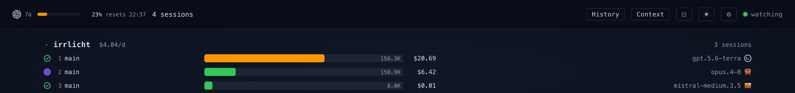
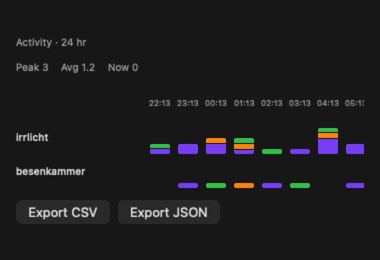
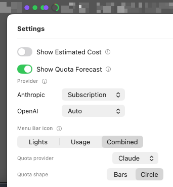
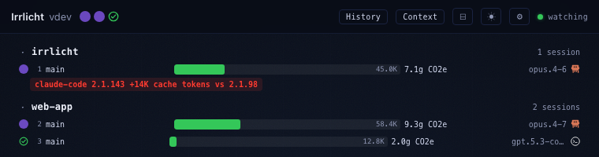
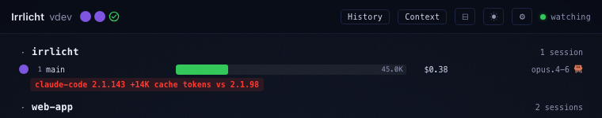

Changelog
All notable changes to Irrlicht, following Keep a Changelog conventions.
v0.5.9 (2026-07-15)
A correctness release: sessions no longer wedge at “working” after a background subagent, and agents whose session directories are relocated by an env var or config key are finally visible instead of silently absent.
No new marquee surface this cycle. This one closes a set of gaps where Irrlicht either got a session’s state wrong and stayed wrong, or never saw the session at all.
The headline is a regression introduced in v0.5.8: the pendingBackgroundAgentCount guard from #1037 could never release, because Claude Code serializes the count with omitempty — a zero is written as absence, never as an explicit 0. So the release condition the guard waited for never occurred. Any parent session that spawned a single background subagent could never reach ready again for the life of that tailer. v0.5.8 traded a false-ready for a permanent false-working; this release makes the guard actually release.
The rest is discovery and accounting. Three agents honored environment variables and config keys that relocate their session root, and Irrlicht read none of them — so setting VIBE_HOME, KIRO_HOME, or Vibe’s [session_logging].save_dir made every session from that agent silently invisible, with no error and no log. All three are now read. Alongside that, the transcript tailer learned to notice a file rewritten in place rather than only one that shrank, which is the difference between resuming mid-record on top of stale state and re-reading correctly.
Added
- The History Activity chart is now behind a beta toggle (#1080, #1075) — in Advanced Settings, default off, on both the web dashboard and the macOS app. The matrix is reconstructed from opt-in recordings, and a never-recorded bucket renders identically to an idle one, so for anyone not recording it was a grid of blanks reading as “idle”. Turning the toggle off while Activity is on screen backs out to the default chart rather than stranding the view.
Fixed
- A parent session no longer stays stuck at
workingforever (#1098, #1076) — once a Claude Code session had spawned a background subagent. Absence ofpendingBackgroundAgentCounton an end-of-turnturn_durationline now normalizes to zero, and the count survives a daemon restart via the ledger instead of going inert. - Mistral Vibe sessions are found when
$VIBE_HOMEis set (#1108, #1095) — upstream honors the variable; the adapter hardcoded~/.vibeand found nothing. - Mistral Vibe sessions are found when
[session_logging].save_diris set (#1123, #1115) — Vibe writes that key into every installation’s defaultconfig.tomlon first run as a resolved absolute path, so it is an inviting edit rather than an obscure knob. - Kiro CLI sessions are found when
KIRO_HOMEis set (#1074) — Kiro CLI v2.3.0 added the variable; the adapter was authored after the sweep that wired the equivalent fix intocodex,claudecode, andpi, and was missed. - Mistral Vibe tokens and cost no longer flatline at zero after an in-place rewind (#1078, #1063) — the parser’s token high-water mark and todo reconciler now reset when the tailer detects a rotation, instead of computing a negative delta against the rewound session’s smaller counters and clamping to zero for the rest of the session. Vibe’s auto-compact threshold also now reads the effective per-model value rather than the global default.
- The tailer detects a transcript rewritten in place, not just one that shrank (#1120, #1104) — a rewrite whose new size was greater than or equal to the last read offset previously took the incremental path, seeking to a stale offset inside a file whose earlier bytes had changed. A fingerprint of the bytes ending at the resume point now catches this, and it is persisted so a rewrite landing while the daemon is down is caught on the next boot.
- Open tool calls are cleared when a transcript rotates (#1118, #1088) — so a call left open in the pre-rotation content can no longer keep a session pinned.
- Mistral Vibe forces the
waitingstate when it asks a structured question (#1109, #1087) — its tool is namedask_user_question, which the shared user-blocking matcher did not recognize, so Vibe fell through to the trailing-question-mark text heuristic instead. Itswrite_filetool is also now recognized as a permission-gated edit. - History control rows that ask to be hidden are actually hidden (#1101, #1079) — an author
display: flexon.history-ctl-rowoutranked the user-agent[hidden]rule, so all three per-chart toggles were silently inert, and two rows shipped thehiddenattribute in the markup, so the default page load mis-rendered too.
Changed / Docs / Testing
monitoring-surface.mddocuments all 10 agent adapters; it previously covered 4 (#1092, #1090).- The structural claims in
monitoring-surface.mdare now enforced as census tests, so the doc cannot drift from the adapters it describes without a test failing (#1107). - Five stale source comments were corrected and their remote annotations dropped (#1111, #1097).
- The four duplicated copies of the
sessionsDir()env-override helper were extracted into one (#1094, #1085). /ir:triagegained an Observability axis with a cost-tiered instrument plan — it asks whether a reported behavior can be reproduced and observed with what exists today, which is the gap that blocks an agent before verifiability does (#1093, #1091).- The 2026-07-15 agent-release sweep was recorded, and false claims it surfaced across the source and docs were corrected (#1072, #1077).
- The Kiro CLI rewind fork lifecycle was re-recorded, and the Vibe rewind driver verdict reconciled against replay (#1105, #1124).
- The Vibe checkpoint-rewind daemon premise is scoped to the TUI path in
replaydata, matching the ACP-only reachability the rotation fix depends on (#1110, #1089). - Model alias map: re-synced against codeburn’s
BUILTIN_ALIASESwith no changes this cycle.
Technical appendix
- pendingBackgroundAgentCount guard release (#1098, #1076): #1037 (v0.5.8) added the guard; its release condition was observing
pendingBackgroundAgentCount: 0, which never occurs. Across 1,698 observedturn_durationlines the value0appears zero times, while1–13appear 176 times and the field is omitted 1,522 times — it is value-driven, not version-driven. The fix normalizes absent →0inclaudecode/parser.go, scoped toturn_durationonly. That scoping is load-bearing:stop_hook_summaryshares the sameturn_donebranch but never carries the field (0 of 88 observed lines), so absence there means “no information”, not “zero” — conflating them would clobber a live non-zero count on every stop-hook event and re-open #1036. Two tests exist purely to lock the scoping. Part 2 persists the count inLedgerStatealongsideBackgroundProcs(#445) andLastEventType(#649), because a restart resumes atLastOffsetand processes zero lines, which left the guard inert on every restart. No schema bump. - In-place rewrite detection (#1120, #1104):
TranscriptTailer.TailAndProcesshad one rotation check,fileSize < t.lastOffset. The fix hashes the up-to-512 bytes ending atlastOffsetafter each pass and re-hashes that window before trusting the offset on the next. The soundness argument is one line: an append never rewrites bytes belowlastOffset, so a matching window means a genuine append and a mismatch means the consumed prefix was rewritten — routed through the same reset-and-replay-from-byte-0 path a shrink already used. A newline-boundary probe was rejected as insufficient (the prefix is corrupt whether or not the stale offset lands on a boundary); inode identity was rejected as the wrong signal (an in-place rewrite keeps the inode, and reading it needs build-tagged files on a platform-neutral package). Failure modes are asymmetric by design: a pre-#1104 ledger carrying an offset but no fingerprint, and an unreadable window, both fall back to historical resume-at-offset behavior — a false positive costs a full re-read, a false negative is whatmaindid. BecauseresetAccumulatorsForRotationis the only caller ofResetForRotation(), #1063/#1078’srotationResetteropt-in inherited this blind spot exactly — those fixed what happens on a detected rotation, not detection itself. - openToolCalls on rotation (#1118, #1088): #1088 was a verification task over four narrow relocation/prune edges, none known broken. Three proved not real and are now pinned by lock tests plus documented evidence: delete-then-create ordering during relocation; subagent relocation detection (unreachable); prune vs. cumulative totals. The fourth was real:
resetAccumulatorsForRotationcleared every other per-file accumulator but notopenToolCalls. Re-reading from byte 0 re-inserts every survivingtool_useby id and the map is id-keyed, so that much is idempotent — what it cannot fix is a call left open in the pre-rotation content, which no surviving line re-inserts or closes. The headline relocation finding from parent issue #1065 was already solved in #877 and is untouched. - Vibe rotation parser reset (#1078, #1063): Vibe’s parser tracks a token high-water mark (
lastPromptTokens/lastCompletionTokens) derived frommeta.json’s session-cumulative counters and emits each turn’s delta. Previously unreachable because Vibe’s/rewindalways forked a new session directory — 2.19.1 made it reachable via the ACP path only:_overwrite_messages_sync(tempfile +os.replace) is gated oninplace=True, which the TUI does not pass (defaults toinplace=False→ forks) but ACP does, and ACP shares the session directory. Without a parser-side reset the stale high-water mark computes a negative delta, both values clamp to zero, andemitContribution’s early return skips updating the mark — so every subsequentturn_donerepeats the clamp. The fix adds an optionalrotationResetterinterface (ResetForRotation()) the tailer type-asserts for, a no-op for the six other adapters sharing the tailer. Vibe’s implementation resets the token high-water mark and theTodoReconciler— the latter because its synthetic per-todo task IDs are assigned in lockstep with the tailer’staskSeq, which is already reset to 0 on rotation, so leavingnextID/idByKeystale would desync the two ID spaces. Deliberately not reset:path(the file does not change across an in-place rewrite) andsidecarCache(self-invalidates via its own mtime/size check). - Vibe
$VIBE_HOME(#1108, #1095): settled against the installedmistral-vibe2.19.1 package two independent ways — source read ofvibe/core/paths/_vibe_home.pyand executing that same installed code. Upstream honors the variable; the adapter’s contradicting in-repo claim was wrong and the changelog was right. - Vibe
save_dir(#1123, #1115):vibe/core/config/models.py:58-63—save_dirdefaults toSESSION_LOG_DIR($VIBE_HOME/logs/session) and, when set, replaces the root rather than layering under it.vibe/core/session/session_logger.py:56-76writes<save_dir>/<prefix>_<ts>_<id>/, holding themessages.jsonl+meta.jsonpair the adapter watches. #1115 asked for a worth-fixing judgement first:cli/cli.py:133-141(bootstrap_config_files) writes a defaultconfig.tomlon first run withsave_diralready spelled out as a resolved absolute path, so the key sits in every installation’s config. That same fact makes the fix low-risk — in the common case the configured value equals what Irrlicht already computed, so the read is a no-op. Without it, the fswatcher blocks inwaitForRooton a path that never appears, indistinguishable from “no vibe sessions exist”. - Kiro
KIRO_HOME(#1074): follows1165dcdf(“honor agent-CLI env vars for relocated session dirs”, #349/#362), which wired the same fix intocodex(CODEX_HOME),claudecode(CLAUDE_CONFIG_DIR), andpi(PI_CODING_AGENT_SESSION_DIR); kirocli was authored later (#590) and missed.sessionsDir()now readsKIRO_HOME, rejects non-absolute values with a log (same as siblings), and joinssessions/clionto an absolute override; the default stays home-relative.kiro/sessions/cli. The false comment claiming “Kiro documents no env var that relocates the session root” — already false when written — is deleted. kirocli had no adapter tests at all; a table test modeled oncodex/adapter_test.gois new. Caveat carried forward from the PR: thesessions/cliappend is not docs-confirmed — kiro.dev’s settings reference saysKIRO_HOMEoverrides the~/.kirodirectory “used for … sessions” without stating whether sessions live directly under it or under a subdirectory. The append was implemented by analogy withCODEX_HOME(identical shape) rather than guessing a flat layout. - Vibe tool-name matchers (#1109, #1087): two shared matchers used exact equality and did not know Vibe’s snake_case names.
ask_user_questionis Vibe’s structured question tool (live in 2.19.1tools_available), but the user-blocking set was{AskUserQuestion, ExitPlanMode, question}— thequestionentry matches a tool literally namedquestion, not a substring — so Vibe never fired rule 1 (NeedsUserAttention). Fixed in both copies:core/pkg/tailer/tailer_config.goandcore/domain/session/metrics.go. The duplication is kept deliberately —isUserBlockingToolName’s doc comment records that it is kept local to the tailer to avoid a domain-package import, and that rationale is intact (no production file incore/pkg/tailerimportsdomain/session; only its tests do). Both sites now carry an explicit KEEP-IN-SYNC cross-reference and twin tests pin both sets. Separately,write_filewas added toisPermissionGatedEditTool: upstream’s v2.14.0search_replace→editrename had silently optededitinto the OpenToolStalled heuristic with no change on our side, whilewrite_filenever matchedwrite. Because that matcher is shared, every adapter undercore/adapters/inbound/agents/was re-checked against the doc comment’s “no adapter names a long-running tool with one of these spellings” claim. - History
[hidden](#1101, #1079):.history-ctl-rowsets an authordisplay: flex, which outranks the UA[hidden] { display: none }rule, so everyel.hidden = trueflipped the property and left the row on screen —syncHistoryRangeRow,syncGranularityRow, andsyncDoraProjectRowwere all silently inert.#history-dora-rowand#history-granularity-rowship thehiddenattribute inindex.html, so the default page load mis-rendered too;#history-charthad the same shape with an authordisplay: block. Fixed with two scoped hatches mirroring the existing.history-matrix-scroll[hidden]precedent — the one element that already worked because someone hit this exact bug there and patched it locally while the siblings were missed.#history-chart[hidden]needs the id to win the cascade (1,1,0 beats#history-chart’s 1,0,0). Deliberately not a global[hidden] { display: none !important }reset: that would change every element currently relying on the buggy behavior and wants its own sweep of.hidden =call sites first. The wholeplatforms/web/tree was swept — DOMhiddentoggling happens exclusively inhistoryTab.js(12 call sites), everything else hides viaclassList; of the 12, the 4 fixed here were the only unhatched ones. This is a real visible change: rows users currently see start disappearing, per each helper’s stated intent. - Activity chart gate (#1080, #1075): a plain local display preference,
enableActivityChart, default off, on both frontends. Unlike the task-eta (#558) and backchannel (#724) activations it sits beside in Advanced Settings, nothing is installed — noActivationClient, no daemon reconcile, no.onAppearmirror; the daemon still serveschart=stateunconditionally. Web:SETTINGS_DEFAULTSplus an Advanced Settings row with the existingbeta-badge, split deliberately into two halves —syncActivityChartVisibility()hidesbutton[data-chart=state]and ridesapplySettings()alongside the other reflect-onto-DOM toggles, whileleaveActivityChartIfSelected()hangs off the per-key effect path next toSOURCE_SETTING_KEYS(a first draft had both inapplySettings(), which meant editingrelayUrlfired a history fetch). The button shipshiddeninindex.htmlso a default-off gate never flashes it. macOS:@AppStorage("enableActivityChart")plusLeadingToggle(beta: true), withHistoryTab.visible(activityEnabled:)filtering the picker per the existingvisibleChartsprecedent. Both platforms reset the selection when the gate is turned off while Activity is live (web →cost, macOS →.usage); on macOS this is reachable in normal use since Settings is a separate window. /ir:triageObservability axis (#1093, #1091): Verifiability names the measurement; Observability asks whether the instrument exists — ✓ Verifiability with ✗ Observability is the case the axis is built for. One deliberate deviation from #1091 as filed: a cost gate rather than a hard fail toneeds-info. Low (instrument exists, just run it) and Medium (extend an existing surface — newlifecycle.Kind, metric field, snapshot scene) leave the verdict unchanged and land the plan in the brief as the ticket’s first step; only High (the rig outweighs the fix) routes toneeds-infoplus a child issue. The skill’s standing “never propose solutions” contract gets an explicit carve-out, stated in both the opening paragraph and “What to leave out” so the two cannot drift: triage may prescribe the instrument, never the fix.
v0.5.8 (2026-07-15)
Mistral Vibe becomes a fully supported agent, the Activity Matrix lands on macOS, and a long sweep of session-lifecycle fixes closes the gaps where a session could silently stall in the wrong state.
Highlights
Mistral Vibe is now a supported agent

Irrlicht now watches Mistral Vibe sessions the same way it watches Claude Code, Codex, and the rest: working/waiting/ready state, the model chip, the context bar, running cost, task summaries, and backchannel control all work out of the box. No configuration — start vibe in a project and it shows up.
Why it matters: if you run Vibe alongside your other agents, it no longer sits invisible in a terminal you have to remember to check. (#921)
The Activity Matrix comes to the macOS app

The Activity Matrix — a projects × time grid showing when your agents were working, waiting on you, or idle — shipped web-only in v0.5.7. It is now a top-level History tab in the macOS app too, zoomable across nine granularities from one minute to one year, with CSV and JSON export.
Why it matters: the menu bar app was the one place you could not see your own activity history, which is where most people actually live. (#1038, #1028, #1047, #1046)
Added
- macOS: a “How is this calculated?” link on the CO2 chart (#1035, #1029) — the same link to the CO2 Methodology page the web dashboard already had, and it stays visible in the empty-data state.
- A waiting-only summary mode replaces expand-all (#993, #985) — a strict two-state toggle instead of a noisy expand-all that flattened every session’s summary into a wall of text; sessions pop open and closed automatically as they enter and leave the waiting state.
Fixed
- Codex subagent rollouts now link to their parent session (#1055, #1050) — instead of appearing as unrelated top-level sessions.
- Codex accounts reporting only a single 7-day quota window (#1052) — no longer get a phantom 5-hour bucket invented alongside it, and the macOS and web copy no longer promises a fixed 5h/7d pair.
- A parent session no longer flips to ready while a background subagent is still running (#1037, #1036) — Claude Code’s own
pendingBackgroundAgentCountis now an independent hold condition alongside the file-based check it used to race against. - Non-Claude adapters no longer fall back to Claude’s model config (#1022, #1019) — mistral-vibe, aider, antigravity, gemini-cli, kiro-cli, and opencode read the operator’s
~/.claude/settings.json, which could surface an unrelated Claude Code session’s model on a Vibe session. - The waiting pill no longer truncates mid-question (#1004, #979) — the hard 70-character cut is gone, a scored sentence covers turns that end without a literal question, and the separate purple “intent” pill is removed on both platforms.
- A session’s first turn is no longer swallowed (#1010, #1000, #999) — when the daemon discovers it late, or when it is a child session, the missing ready→working step is synthesized instead of collapsing the turn.
- Backchannel state is re-keyed across presession reconciliation (#1007, #1001) — a session discovered before its process is identified keeps working control instead of silently losing it.
- Cold-start session discovery is now bounded (#1011) — the filesystem watcher arms a root watch and scans newest-first instead of walking an unbounded history.
- A tracked pre-session is not reaped until its PID is confirmed dead (#994).
- History’s concurrency charts resolve each project once per scan (#1058, #1049) — and cache it, instead of invoking git per request.
- A session whose only recorded transition is still active is counted in the concurrency series (#990, #983) — instead of vanishing from the chart.
- Idle Mistral Vibe sessions retry cwd/project resolution (#1031) — instead of staying unattributed.
- Homebrew: the cask uses the symbol form
depends_on macos: :ventura(#1053) — silencing the deprecation warning Homebrew printed on everybrew upgrade.
Changed / Docs / Distribution
- Two macOS snapshot references drifted by a toolchain antialiasing change were regenerated (#1044).
ir:test-macstamps the dev version string into the replace-mode Info.plist (#1006) — so a dev build is identifiable in the GUI.- onboarding-factory: teardown polls, daemon.log classification, and a known-seams document (#1025) — recording which gaps are deliberate.
- onboarding-factory: shared TUI-dialog-dismiss poll extracted into
_lib/drive(#1014, #1008) — and mistral-vibe’s tool-permission step waits on a condition instead of a fixed sleep. - CI: the star-history chart commit routes through a PR (#1015, #1013) — and its stargazer fetch uses a PAT instead of
GITHUB_TOKEN. /ir:execdocs and self-assign precondition (#1023, #991, #1030, #1027) — documents[mode] <N>invocation and auto mode, requires a feature to be implemented and verified across every frontend it touches, and makes Phase 4’s self-assign a verified precondition rather than a best-effort step.
Technical appendix
- Mistral Vibe adapter (#921): a full agent column — Go adapter under
core/adapters/inbound/agents/vibe/plus the complete onboarding-factory matrix column (44 scenario cells, driver, recordings).SourceisFilesUnderRooton~/.vibe/logs/sessionwithSessionIDFromPath, since the transcript filename is the constantmessages.jsonland the session id is therefore the parent<session-id>directory. Verified against a real~/.vibetranscript rather than the AI-generated handover doc, which was wrong on two points now corrected: tool calls use the OpenAI nestedfunction.nameshape (not a flatname), andvibeis a Python console-script whosecommis the interpreter — so anExactName{"vibe"}process match would never fire and it needs aCommandPatternon the command line instead. cwd, model, context window, and token counts come from the siblingmeta.jsonsidecar (config.active_model,config.auto_compact_threshold,stats.context_tokens), memoized by (mtime, size), since the JSONL itself carries no timestamp, cwd, model, or usage.SplitsQueuedFollowUpTurnsopts into queued-turn boundary detection (#988) because vibe’smessage_queue.pydrains a mid-turn follow-up synchronously the instant the prior turn’sagent_running()clears — a genuinely distinct turn with no observable ready gap. - Activity Matrix on macOS (#1038, #1028): the daemon’s
chart=stateAPI was already correct and fully tested from v0.5.7; nothing on the macOS side ever consumed it, and the v0.5.7 changelog did not disclose the gap. AddsHistoryStateResponse(a sibling toHistoryYieldResponse/HistoryDoraResponse, matching the wire shape 1:1) andHistoryGranularity(the nine-step 1m..1y zoom that replaces range/start/end entirely for this chart, mirroring the daemon’s ownchart=="state"special case). Activity is a top-level tab rather than nested under Metrics because it has no Range/Group at all.HistoryActivityContentViewpins the project-name column beside a horizontally-scrollable grid — SwiftUI has no built-in two-axis sticky-header grid, so only the row-label column is pinned in this pass, a deliberate v1 scope reduction. Cells scale against the busiest cell in the whole grid, not per-row. Tooltips go through the app’s own.tooltip()rather than SwiftUI’s.help(), which does not render inside theNSPanel. - Activity Matrix cleanup (#1047, #1046): live QA of the new macOS tab surfaced four bugs in
chart=state, two of them shared with itschart=agentssibling. A session with no recorded CWD was labeled “unknown” unconditionally inside the concurrency tracker, unlike every other chart, which only surfaces “unknown” past a 10%-of-window-total share — the substitution moved out toresolveUnknownConcurrencyProject/resolveUnknownStateProject.buildStateResponsenever capped project rows, so every project with any historical activity appeared, including years-old one-off worktree sessions; capped to the busiest 8 (historyStateProjectLimit).concurrencyProject()did a rawfilepath.Base(cwd)with no git-root resolution, so a session run inside.claude/worktrees/<N>-<slug>/was keyed as its own project instead of folding into the real repo; now wired throughgit.Adapter.GetProjectNamevia aconcurrencyProjectResolverinterface, memoized per scan.HistoryActivityContentViewwas the one view inHistoryView.swiftnot constraining its width with.frame(maxWidth: .infinity)and overflowed the fixed 380pt panel. - pendingBackgroundAgentCount hold (#1037, #1036): the file-based
hasActiveChildrencheck loses a short race when a child’s transcript finishes and is reclassified to ready (and cleaned up) moments before Claude Code delivers the task-notification that would give the parent a reason to keep working. Claude Code’s ownturn_durationsystem event already reportspendingBackgroundAgentCount; it is now folded intoholdParentForActiveChildrenandreevaluateParentas an independent OR condition. - Non-Claude model fallback (#1022, #1019):
getDefaultModelFromConfig’s switch only special-cased “pi” and “codex”, so every other adapter fell into a catch-all default that read the operator’s~/.claude/settings.json. A mistral-vibe session whosemeta.jsonsidecar had not been written yet (the window right after a/clearrotation) would surface an unrelated claude-code session’s model name instead of staying empty. - Waiting pill (#1004, #979): the summary fell back to the raw first prompt cut at a period, and the question box truncated an already-correctly-extracted question at a hard 70-rune cut, sometimes chopping off the actual question. The daemon’s safety bound rises to ~200 runes, a shared heuristic sentence-scorer covers the case where no literal question exists, and the pill passively upgrades from Claude Code’s own
away_summaryrecap once it arrives. The separate purple “intent” pill is deleted on both platforms — the surviving orange/waiting pill is the only textual element and shows only while waiting, so a finished session shows no textual pill by design. - Waiting-only summary mode (#993, #985): a strict two-state toggle — collapsed (unchanged) and waiting (summary/question block shown only for sessions whose
state === 'waiting'), computed live off session state so a session transitioning in or out of waiting pops open or closed automatically instead of relying on a stale snapshot. Web keeps its per-row manual chevron as a separate row-scoped concern layered on top of the global mode; macOS has no per-row toggle, so the mode alone drivessummaryBlockvisibility. - Backchannel re-keying (#1007, #1001): both
BackchannelEngine’s edge state and the terminal-observer/session state were keyed on an identity that changes when a presession reconciles into a real session, so control silently detached at reconciliation; both are now re-keyed across the transition. - Codex rollout linkage (#1055, #1050): derives Codex thread identity and subagent parent linkage from rollout session metadata, and defers zero-byte child create events until their header is readable, preventing a child from flickering as a top-level session before its parent link is known.
- Concurrency project caching (#1058, #1049): raw-CWD project resolution now persists on the daemon-lifetime concurrency tracker, with a cache-miss guard so concurrent history requests invoke git once per CWD rather than once per request.
- Model alias map: re-synced against codeburn’s
BUILTIN_ALIASESwith no changes — the only upstream addition is agpt-4.1self-alias that is a no-op for us and stays deliberately omitted.
v0.5.7 (2026-07-13)
History gains three new lenses — agent activity over time, DORA metrics, and CO2 equivalents — alongside a major flaky-test cleanup, non-English waiting-cue detection, and a wave of accessibility and mechanical-quality fixes.
Added
- Activity Matrix chart in History (
chart=state) (#981, #986) — a projects × time-bucket grid of working/waiting/ready agent counts, zoomable across nine granularities from 1 minute to 1 year. - DORA metrics in History (#951, #959) — Deployment Frequency, Lead Time for Changes, Change Failure Rate, and MTTR as a new Metrics section on both macOS and web, computed on request from the selected project’s git repo.
- CO2 equivalent reference lines on the CO2 chart (#952, #955) — a web search, a phone charge, a flight, a tree-year, and more, plus a “CO2 Methodology” docs page citing the source for every figure.
- Non-English question and waiting-cue detection (#939) — sessions ending a turn in German, Spanish, French, or Portuguese now correctly register as waiting on you instead of only ASCII/English cues.
- Cache-bloat badge shows percentage above baseline (#949) — not just an arrow.
- macOS: a single “Enable notifications” master toggle (#947) — gates all three per-event notification rows instead of always showing them.
- onboarding-factory: interrupt and reset_session driver actions (#970, #935, #972) — implemented for antigravity and kiro-cli.
Fixed
- WCAG-AA contrast failures in summary/question pills (#984, #987) — on macOS and web, in both light and dark mode; some combinations measured as low as 2.03:1 against the 4.5:1 minimum.
- CO2 chart reference-line labels overlapping each other (#980, #982) — the near-invisible methodology icon is now a clearly visible “How is this calculated?” link.
- DORA project picker could overflow the History panel (#969, #962) — with a long project name.
- History tab’s Range/Group controls closed a
<fieldset>with a mismatched</div>(#968, #958) — HTML5 silently ignores the mismatch rather than closing, so later controls could end up nested inside the still-open fieldset. - Custom backchannel actions (e.g.
/compact) never actually submitted (#966, #963) — they typed the command but never appended a submit sequence. - Contrast fix for the comparison-badges documentation page (#961, #960) — third attempt at satisfying an automated checker that appears to ignore alpha-compositing.
- The ready→working “force-bounce” now logs a reason (#953, #957) — instead of silently flipping state with no visible cause in the events log.
- A session starting a fresh background process right after settling to ready could bounce back to ready (#941, #937) — missing the new process’s liveness hold.
- A recurring family of
-racetest flakes, closed out for good (#973, #976, #965, #967, #975) — root-caused to a session-repository aliasing bug (a shared*SessionStatepointer handed out byLoad()). - Swallowed exceptions in the web dashboard are now logged (#938) — instead of silently discarded, so private-mode storage failures and dropped websocket frames are at least visible in the console.
Changed / Docs / Distribution
- macOS Settings and History panels now share one header/toggle/spacing/width chrome (#947) — the History Filters dropdown is removed in favor of the existing drilldown, and the Menu Bar Icon segmented control now fills its row edge-to-edge.
- Internal: 13 functions taking 8+ positional parameters now take an options struct (#945).
- ~50 mechanical SonarQube maintainability findings resolved (#932, #950, #960, #961) — across Go, Swift, JavaScript, CSS, and Dockerfiles, plus 79 already-fixed findings closed via the SonarQube API after being suppressed in code but never marked resolved upstream.
Technical appendix
- Activity Matrix (#981, #986) —
ConcurrencyReader.StateSeriesreconstructs per-project, per-state bucketed counts from lifecycle recordings;sessionTimeline.activeIntervalsis refactored onto a sharedstateReconstructionso the merged (agents) and per-state (state) views can never drift apart.chart=stateresolves its window from a named?granularity=step; month/6-month/year use an averaged bucket width rather than true calendar boundaries, a deliberate documented approximation. Found via live smoke-testing: a session still active at the query window’s end was spuriously counted as having gone “ready” — fixed with a regression test. A second, unrelated pre-existing edge case was found in the same session and filed separately as #983. - DORA metrics (#951, #959) — supersedes #919/#936’s wrong-shaped standalone-script attempt.
core/domain/doraholds pure, unit-tested metric functions;core/adapters/outbound/gitgains three read-only methods; newchart=dorafollows the existingchart=yield/chart=agentspattern. - CO2 equivalents (#952, #955) — up to 3 red dotted reference lines at the height of a relatable everyday CO2e equivalent (17 entries spanning 0.2g to ~100 tonnes), ported natively to macOS SwiftUI Charts. Follow-up (#980, #982) densifies the table with 8 new entries, converts remaining imperial units to metric, and adds a pixel-level minimum-gap backstop.
- Non-English waiting-cue detection (#939) — question/waiting-cue detection was ASCII/English-only. Five follow-up review rounds tightened the initial patch, dropping ambiguous German/Spanish/Portuguese possessive forms and English-word-collision prefixes, adding NFD-accent folding, and refactoring into named helpers per CodeScene/SonarCloud feedback; full 123-subtest session package suite passes unchanged throughout.
- Cache-bloat percentage badge (#949, #946) — computes how far the session’s current median cache-creation per turn sits above the project’s p25 baseline.
- Notifications master toggle + Settings/History chrome unification (#947) — a single toggle gates the three per-event rows with a one-time migration default; shared
PanelHeader,IrrSpacingtokens, andEqualWidthSegmentedControl(anNSViewRepresentablebridge) so the Menu Bar Icon segmented control fills its row edge-to-edge. Removes History’s Filters dropdown entirely since drilldown already covers narrowing to one project/branch/model. - onboarding-factory driver actions (#970, #935, #972) — ports the
interruptstep (Escape) into antigravity and kiro-cli, live-verified against real authenticated sessions. kiro-cli’sreset_sessionlive-verifies (2.6.0) that/chat newrotates the session id in-process; antigravity’sagyhas no reset command at all, documented as a genuine capability gap rather than a stub TODO. - WCAG-AA contrast (#984, #987) — pill text was a fixed hex on a 12%-alpha wash of itself; macOS adds
Color.adaptive(light:dark:)and per-appearance tokens tuned against the measured wash colors; web adds light-mode overrides for the state-color tokens and their-dimcompanions. - DORA project picker overflow (#969, #962) — the picker used
.fixedSize()with no upper bound. - History fieldset close tags (#968, #958) — a mismatched
</div>against a “special” HTML5 element is ignored rather than closing it. - Backchannel Custom actions (#966, #963) — routed through
SendCommand, which already owns the per-backend submit logic, instead ofSendInput’s bare typing with no submit sequence. - Ready→working force-bounce logging (#953, #957) —
forceReadyToWorkingIfActivenever calledd.log.LogInfolike every sibling transition function. - Background-liveness probe ordering (#941, #937) — hoisted the force-bounce to run before the liveness probe, kept gated in lockstep with the
NoSubstantiveActivityskip (#329). - mockRepo/memRepo aliasing race (#973, #976, #965, #967, #975) — root cause of a recurring whack-a-mole of “-race flakes” (#606, #942/#944, #956/#964); routed Load/Save/ListAll through a new
deepCopySessionStatehelper closing the aliasing class at every call site, plus new regression-guard tests. - Swallowed exceptions logged (#938) — 21 empty/near-empty catch blocks now
console.debugthe error; extracted a sharedcollapsedSet.jsfactory to resolve a SonarCloud duplication-gate regression the fix triggered. - Options-struct refactor (#945) — 13 functions exceeding SonarQube’s 7-parameter limit now take a doc-commented Deps/Options struct; 61+ call sites updated, pure signature refactor.
- SonarQube backlog (#901, #932, #950, #960, #961) — mechanical fixes, a cognitive-complexity extraction (
resolveHistoryQueryout ofhandleGetHistory, complexity 20→under 15), a<dialog>-element conversion for Settings/Permissions modals, and 79 already-fixed findings closed via the SonarQube API.
v0.5.6 (2026-07-09)
Subscription quota lands in the menu bar icon; a full security & code-health sweep closes every open CodeQL/SonarQube finding.
Highlights
Subscription quota in the menu bar status icon

The menu bar status icon can now render your 5-hour/weekly subscription-quota windows directly — as stacked bars or a compact ring — instead of only inside the popover. Pick Lights (today’s dots, unchanged default), Usage (quota only), or Combined (both side by side), and choose which provider’s quota to show if you have more than one subscription.
Why it matters: a glance at the menu bar now tells you how close you are to a quota reset, without opening the popover first. (#917, #909)
Added
/ir:releasegained an automated security-scan gate (#890) — Dependabot, CodeQL,govulncheck,gosec, andnpm auditall run before every release build, closing a gap where CodeQL’s default setup had silently lapsed with zero local scanning to catch it.- Model alias map synced with codeburn — added Xiaomi MiMo and Kwaipilot KAT-Coder aliases (currently price at $0 pending a LiteLLM entry for either model).
Fixed
- Sessions with a still-active background child no longer flip to ready mid-turn (#889, #893, #897, #899) — covers both a parent whose turn ends on a waiting cue and a parent that already looked idle when a new Workflow-tool subagent appears.
- A session’s transcript moving into or out of a git worktree is no longer mistaken for the session ending (#877, #878).
- Long-running background-research subagents no longer falsely time out and get reaped (#881, #882) — the inter-write quiet window is raised to 90s to cover slow Web Search/Fetch-heavy gaps.
- The CO2 estimate next to cost no longer wraps to a second line for kilogram-scale sessions (#920, #922).
install.shno longer kills unrelatedirrlichddaemons on the machine when restarting its own, and the release smoke test’s daemon-liveness check no longer flakes (#871, #876).- The README’s CodeScene badge was reading the hotspots-only score instead of the overall project score (#918).
Security
- Closed every open CodeQL code-scanning alert and the remaining SonarQube security/reliability findings from the project-wide #901 sweep (#894, #896, #907, #908, #910, #912, #913) — path-injection guards across the daemon’s HTTP-facing file handlers, an SSRF check on the relay’s outbound WebSocket URL, prototype-pollution hardening in the dashboard, and path-traversal /
innerHTML-injection hardening in the onboarding-factory viewer.
Changed / Docs / Distribution
- README star-history chart is now self-hosted instead of depending on star-history.com’s shared, rate-limited API token (#903, #904); the SonarCloud quality-gate badge was replaced with the steadier security/reliability/maintainability rating badges (#902).
/ir:codescene-reportreplaced by/ir:sonarqube-report(#884) — concrete file:line findings with fix guidance instead of an aggregate hotspot score./ir:doc-reviewnow fixes findings directly (#875) — instead of filing a GitHub issue for most of them; filing is the fallback only when a fix is genuinely ambiguous.
Technical appendix
- Quota menu bar icon (#917, closes #909) — new
@AppStorage-backedMenuBarStyle/QuotaVisualStyle/MenuBarQuotaProvidersettings (default.lightspreserves today’s icon);QuotaMenuBarRendererrenders stacked 5h/7d bars or a compact ring, sharingSessionListView’s pace-percent and color-ramp logic so the icon can’t disagree with the popover. A same-PR follow-up fixed real defects an independent second review caught: settings changes not triggering a repaint, a stale-snapshot mismatch with the popover, an absolute-only color ramp that could diverge from the popover’s pace-aware one, and hardcoded colors unreadable in light menu-bar appearance. - CO2 unit line-wrap fix (#922, fixes #920) —
formattedCO2used two decimal digits for the kg branch while g/mg branches use 0-1, producing strings like “16.15kg” that overflow the fixed-width cost/CO2 column; matched the g branch’s precision and addedlineLimit(1)as defense-in-depth. - CodeScene badge score source (#918) — the refresh workflow read
current_score(hotspots-only) instead ofcode_health_weighted_average_current(the actual project score). - Cognitive-complexity sweep, part of #901 (#916) — refactored all 119 open
go:S3776/javascript:S3776findings down to Sonar’s threshold across 74 files via pure structural extraction, zero intended behavior change. - Flaky relay control test fixed (#915) —
TestRelayRoutesControlToDaemonnow reads the client’s initial snapshot frame (which can only arrive post-registration) before dialing, establishing a real happens-before instead of relying on timing. swift:S1075false-positive suppression (#914, part of #901) — all 70 flagged lines are local filesystem/binary paths, fixed loopback-API routes, SwiftUI preview literals, or opaque test fixtures.- Remaining CodeQL alerts closed (#913) — a post-#910 scan found 4 more alerts, 3 new dataflow paths to already-guarded sinks through a different taint source, each closed with a direct taint-visible guard; the 4th (relay-URL request forgery) is left as documented, accepted risk since a user-configurable relay endpoint is incompatible with CodeQL’s fixed-allowlist sanitizer guidance.
- All open CodeQL alerts resolved, part of #901 (#910, closes #907) — 37 alerts: 1 critical SSRF (relay WebSocket URL validation before
DialContext), 35 high path-injection, 1 medium prototype pollution (irrlicht.jsagent registry nowObject.create(null)). - Remaining SonarQube security/reliability findings, part of #901 (#912) — an empty
go.sumfor a zero-dependency module,NOSONARannotations on two already-documented intentional trade-offs, and a DockerfileCMDrewritten to exec form. swift:S100naming-convention sweep (#911, part of #901) — mechanical rename of 98 underscore-named XCTest functions to camelCase across 12 test files, with matching snapshot reference images renamed alongside.- SonarQube findings phase 1, part of #901 (#908) — sanitized
dashboard_urlbefore logging, tightened a Keychain item toThisDeviceOnly,charCodeAt→codePointAtonatob()output, safer float parsing. 17 additional findings confirmed false-positive/wontfix by direct code inspection. - README badge swaps (#902, #904, fixes #903) — self-hosted star-history SVG decouples the README from star-history.com’s shared, rate-limited token pool; SonarCloud’s quality-gate badge replaced with the security/reliability/maintainability rating badges.
- Turn-done waiting hold, part of #901 sweep (#899, fixes #897) — a parent whose turn ends on a waiting cue collapsed straight to
waitingeven with a genuinely-running background Agent-tool child, because that branch never checkedhasActiveChildrenthe way the ready-transition branch already did. javascript:S6819accessibility fix, part of #901 (#900, closes #898) — replaced a nestedrole="button"div/span pair in the design-system’sGroupHeader.jsxreference copy with two real sibling<button>elements.- SonarQube VULNERABILITY/BUG/CODE_SMELL cleanup, part of #901 (#896, fixes #895) — ~700 findings addressed across shell/JS/Go/Swift/CSS: absolute-path resolution for 16 shelled-out binaries, non-root Docker users, ARIA labels and contrast fixes, locale-safe sort comparators. One real bug fixed as a byproduct:
state_machine.go’sTotalDurationMs()was missing its lock entirely. - Ready-parent hold for new Workflow-tool children (#893, fixes #889) —
holdParentWorkingForNewChildforces the parent back toworkingthe instant a new child is discovered, surviving the periodic stale-session refresh instead of being silently undone. - Onboarding-factory archive-name and innerHTML hardening (#894, fixes #892) — a
SafeArchiveNametype is now the only path toarchiveFilePath;manifestBox/driftNoteinnerHTML templates replaced with DOM construction. ir:releasesecurity-scan gate (#890, fixes #885) —tools/security-scan.shchecks open Dependabot/CodeQL alerts,govulncheck,gosec, andnpm audit; wired into/ir:releaseStep 5.5 andtools/preflight.sh --only security. Re-enabled CodeQL default setup for Go and JavaScript/TypeScript.dashboard_urliframe validation (#888, closes #886) —resolveDashboardIframeUrlrejects anything but a same-origin http(s) URL instead of assigning server-provided input directly toiframe.src./ir:sonarqube-reportreplaces/ir:codescene-report(#884) — SonarQube Cloud’s issues API returns concrete file:line findings with rule keys and fix guidance, unlike CodeScene’s aggregate-only hotspot scores.SubagentQuietWindowraised to 90s (#882, fixes #881) — 30s falsely tripped on a genuine 61-second inter-write gap from a WebSearch/WebFetch-heavy background subagent, causing the parent to surfacereadyfor 67 seconds while real work continued.- Worktree-relocation transcript tracking (#877, #878) —
onRemovednow detects a transcript relocated into a sibling project-dir slug (e.g. entering/closing a git worktree) and re-points tracking at the surviving file instead of demoting the session to ready. viewer.jsdecomposition (#873, #880) — extractedrenderPlayback’s (660 lines, CodeScene’s worst score in the repo) timeline geometry, DOM painting, and replay-transport concerns into three sibling modules; DOM output byte-identical, locked by 41 new characterization tests.irrlicht.jsrow-rendering decomposition (#872, #879) — split the ~270-line, ~37-branchupdateSessionRowinto per-columnrenderRow*helpers; pure mechanical extraction, DOM output unchanged.- Release-tooling fixes found while shipping v0.5.5 (#876, fixes #871) —
install.sh’s daemon kill is now scoped to whatever is bound to port 7837; the smoke test’s daemon-liveness check gained a retry loop;seed-demo-sessionsnow auto-creates its scenarios’ referenced cwd paths. - Agent landscape refresh (#874) — refreshed GitHub stars/metadata for tracked agents; marked Gemini CLI, Antigravity, and Kiro as irrlicht-supported; archived Void and Roo Code.
ir:doc-reviewfixes-by-default (#875) — every determinable finding is now fixed in place, with filing/closing a GitHub issue as the fallback only for genuinely ambiguous findings.- Model alias sync — added
mimo-v2-flash→xiaomi/mimo-v2-flashandkat-coder-pro-v1→kwaipilot/kat-coder-profrom codeburn’sBUILTIN_ALIASES; neither canonical is in LiteLLM’s pricing table yet. tools/security-scan.sh’s Dependabot/CodeQL gate was silently non-functional — missing an explicit--method GET,gh apidefaulted every alert query to POST (since-fparams force POST) and 404’d, misreported as an auth/scope failure. Running it for real surfaced CodeQL alert #54 (go/request-forgery, relay URL), already documented as accepted risk in #913 but never dismissed — dismissed now.
v0.5.5 (2026-07-04)
CO2 estimates next to cost, a self-explaining cache-regression badge, and reconnect reliability fixes.
Highlights
Estimated CO2 footprint alongside cost

Click a session’s cost figure and it now cycles to an estimated CO2e footprint, with a hover tooltip disclosing how confident the number is — provider-disclosed coefficients where a provider publishes them (Gemini, Mistral), a cross-model average otherwise.
Why it matters: cost isn’t the only budget that matters. Now you can see a session’s environmental footprint with the same glance you’d check its price — no separate tool, no export. (#829, #831)
Cache-regression badge explains itself

The badge that flags a session whose prompt-cache reuse has regressed now always shows which agent version caused it (or a compact “cache ↑” fallback), with the full plain-language explanation on hover — instead of a bare icon you had to guess at.
Why it matters: when caching quietly breaks and a session starts costing more per turn, you immediately know why and which update triggered it, not just that something changed. (#813, #826, #827, #842)
Fixed
- History → Usage tab: grouping by Model no longer buckets everything under “unknown” (#792, #793) — a wrong source field meant every session landed in one aggregate bucket regardless of which model was actually used.
- History’s tab switcher moved into the header, controls collapsed to one row (#785, #788) — the Usage/Yield/Quota picker now lives in the header instead of a static label, and Range/Chart/Group/Forecast controls sit on one scrollable row instead of three stacked ones.
- Menu bar app recovers when the daemon it’s connected to restarts (#843, #845) — local-daemon traffic now rides its own recyclable connection with a visible “daemon unreachable — retrying” state, instead of retrying forever against a wedged one.
- Relay connections recover from the same wedged-restart failure mode (#846, #848) — mirrors the local-daemon fix for a restarted standalone
irrlichtrelay. - Menu bar session count no longer double-counts relay-echoed sessions (#828, #830) — a local daemon that also publishes to a relay it subscribes to could overcount a project’s sessions in the menu bar dots/badge.
- “Expand All Task Summaries” toggle now persists across restarts (#799, #800).
- Antigravity sessions bound to a non-interactive background poller no longer show as phantom menu-bar circles (#784, #791) — a known third-party helper process is now recognized and excluded at admission time.
- FocusMonitor’s remaining crash path on the macOS 26 SDK closed (#782, #790).
- Subagents whose worktree/transcript disappeared mid-run are reaped (#850) — instead of lingering as phantom sessions.
- Daemon route-registration startup race fixed (#794, #795, #798).
Changed / Docs / Distribution
- Dropped a fragile SwiftPM resource-bundle dependency (#844, #847) — removes a crash mode where a dev build’s
.appcould outlive the worktree it was built from. - Doc-review sweep gained a
--fixmode, wired into the release process itself, and the README’s CodeScene score badge now auto-refreshes on every push to main (#834, #835, #837).
Technical appendix
- Estimated CO2 footprint (#829, #831) —
capacity.EstimateCO2Grams: a tiered CO2e estimation formula using provider-disclosed coefficients for Gemini and Mistral, falling back to a cross-model average (Epoch AI) for everything else, including Claude and GPT. Wired through the tailer’s existing cumulative-token computation intoSessionMetrics.EstimatedCO2Grams+CO2Tier, mirroringEstimatedCostUSD’s plumbing. Ships as a click-to-cycle web dashboard surface first; CLI/macOS parity and historical/aggregate tracking are deferred follow-ups. - Cache-regression badge explanation (#813, #826, #827, #842) — an always-visible badge on both macOS and web showing the version attribution (or a compact
cache ↑fallback), composed once daemon-side intocache_bloat_explanationinstead of each client re-deriving the copy independently. - History Group=Model fix (#792, #793) —
RecordSnapshot/RecordBaselinestamped each cost row’sModelfield fromSessionState.Model, which is never assigned in production code, so every row landed in the aggregate “unknown” bucket. Falls back toMetrics.ModelName, mirroring the session-list handler’s existing pattern. - History header/controls redesign (#785, #788) — moves the Usage/Yield/Quota tab picker into the header, flattens the controls onto one horizontally-scrollable row, and gives the popover a hard fixed height independent of width.
- Local-daemon reconnect recovery (#843, #845) — fixes a reset-every-attempt backoff bug plus a
URLSession.sharedwedge against a restarted daemon, via a dedicated recyclableURLSessionand a surfaced “daemon unreachable — retrying” state. - Relay reconnect recovery (#846, #848) — the same wedged-
URLSession.sharedfix, this time for a restarted standaloneirrlichtrelay. - Relay-echo dedup in the flat sessions array (#828, #830) — mirrors the existing
apiGroupsname-based collapse intorebuildSessionsFromMap(), which only deduped by id and missed the echoed session’s drifted id. - Antigravity non-interactive host rejection (#784, #791) — a known third-party helper (CodexBar) keeps an Antigravity CLI process running in the background to poll quota; a synchronous ancestry check at PID-discovery time (
PIDManager.AllowsSession) now excludes processes whose ancestry doesn’t resolve to a known terminal/IDE. - FocusMonitor KVC crash path (#782, #790) —
isFocusActive’s remainingvalue(forKey:)reads now use the sameresponds(to:)-guarded selector dispatch as the earlier singleton-lookup fix. - Subagent reaping on deleted transcript (#850) — adds
isDeletedTranscript(confirmed-gone viaos.IsNotExist) so a subagent whose parent PID was reused by an unrelated process is reaped instead of surviving forever. - Daemon route-registration startup race (#794, #795, #798) — plus a flaky CI test and preflight tooling fix bundled in the same PR.
- SwiftPM resource-bundle removal (#844, #847) —
Bundle.module’s only use (AppIcon.icns) was already covered by a direct bundle copy, so the fragile SwiftPM mechanism is removed entirely. ir:doc-review --fixmode (#834, #837) — auto-corrects doc claims directly contradicted by a code-derived fact; wired into/ir:releaseStep 4b so drift from any earlier release gets caught, not just this one’s diff. This is what caught README.md/site/index.html’s stale “no hooks” claim, corrected in this release.- CodeScene badge automation (#835, #802) — a scheduled workflow refreshes the README’s CodeScene badge on every push to main; a manual fetcher backs the
/ir:codescene-reportskill. - Hexagonal layering enforcement + ARS regression gate (#796, #803) —
core/architecture_test.gostatically enforces domain/ports import direction;tools/ars-gate.shflags an Agent Readiness Score regression as an advisory PR check. - Shared contract test for consent-gated adapter call sites (#797, #817) —
contracttesting.AssertPermissionGatedbehaviorally verifies a permission’s Apply/Remove wiring at runtime. ir:test-maccomponentized restart (#833, #838) — aTARGET=daemon|macos|fullaxis restarts just the changed component;MODE=replacenow installs directly into/Applications/Irrlicht.appinstead of a same-bundle-id parallel/tmpcopy.- CodeScene hotspot cleanup sprint — eight no-behavior-change refactors splitting flagged hotspots:
tailer.TailAndProcess/processParsedEvent(#822),domain/session.goby concern (#808, #816),irrlicht.jsinto modules (#805, #820),SessionListView.swiftinto per-concern views (#818),PIDManager’s liveness sweep/dedup deletion (#810, #819),irrlichd main()into named startup phases (#821),SessionManagergod-object into extensions (#815), andsession_detector_test.goby scenario group (#814, #824). - Dependency bump —
golang.org/x/net0.52.0 → 0.55.0 incore(#801). - Misc test/tooling hygiene —
SessionRowSnapshotTestsmade hermetic against a live daemon (#841); pre-push hook no longer inherits a strayGIT_DIR/GIT_WORK_TREE(#812). - Docs — worktree shortcuts + Task Management tidy-up and a git-stash note in AGENTS.md (#789, #825), Karpathy Guidelines section removed (#787),
ir:test-macdoc defaults to replace mode (#786), CodeScene/ARS README badges given their own line plus a workflow badge (#836, #823).
v0.5.4 (2026-06-29)
A full History view with spend analytics, a backchannel that acts on your agents, and plain-language session summaries.
Highlights
Spend & history analytics

A new History view turns every recorded session into cost analytics — a cumulative spend chart with a linear projection, breakdowns and drill-downs by project, branch/worktree, provider and model, a concurrent-agents timeline, and a productive-vs-reverted “yield ratio” per project. Facet any axis, cross-filter by token type, and export the whole thing to CSV or JSON. It ships in both the macOS app and the web dashboard.
Why it matters: you can finally see where your agent spend actually goes — which project, which model, and how much of it landed versus got reverted — without exporting anything by hand. (#752, #761, #771, #773, #778, #772)
Backchannel — act on your agents

Backchannel turns Irrlicht from a read-only monitor into something that can talk back: control discovered agents locally or remotely, across agents and terminal backends. Define event→action rules (e.g. when context crosses 85%, send the compact command), pick from agent-translated command presets, or write your own Custom command — and trigger them by a backchannel token.
Why it matters: routine babysitting — compacting a full context, answering a prompt, nudging a stuck session — can now happen automatically or with one click, from any machine. (#731, #733, #769)
Plain-language session summaries

Session rows now lead with a human-readable headline instead of raw transcript text: a purple block summarizing what the agent is working on, and an amber block with the exact question it’s waiting on. Summaries are generated from lightweight markers with a pluggable compaction step.
Why it matters: a glance at the menu bar tells you what each agent is doing and which one actually needs you — no expanding rows to read the last message. (#765, #770, #743)
Added
- ETA accuracy improvements, surfaced sooner (#768) — a replay-based estimator informs the task-completion estimate earlier in a turn.
- Built-in diagnostics bundle (#742) — a
/debug/bundleendpoint and anirrlichd --diagnoseflag collect a redacted snapshot for bug reports. - Cache-creation regression detection (#749) — sessions that stop reusing prompt cache are flagged and attributed to the upstream agent version that changed.
- Generic GUI-host fallback for click-to-focus (#741) — focusing a session works for more terminal/IDE hosts out of the box.
- Agent-legible HTML snapshot artifacts for the session list, plus an enriched opt-in lifecycle trace that makes ghost sessions reconstructable (#764, #760).
Fixed
- Detached background agents are now badged (#747) — instead of showing as phantom rows.
- Sidebar no longer double-lists relay-echoed local projects (#748).
- Ghost sessions age out / get reaped (#740, #734) — antigravity PID==0 ghosts age out, and sessions bound to a
claude --bg-spareinfra PID are reaped. - Settings panel no longer janks (#730) — the ~2fps / high-CPU redraw storm is gone.
- Text-to-speech crash fixed on macOS (#781).
- Launch crash fixed on the macOS 26 / Xcode 26 SDK (#782) —
FocusMonitorresolves the Focus singleton via a guarded selector instead of KVC, which now raisesNSUnknownKeyException. - Price non-Anthropic-frontend sessions correctly (#726) — synced the model-alias map with codeburn and added new aliases (OpenAI Codex
gpt-5.5, Hermes lowercaseglm-5.2).
Changed / Docs / Distribution
- History and Settings panels decluttered on macOS (#781).
- New
/ir:execskill (#758, #767) — an end-to-end issue loop (worktree → visual HTML plan → implement → PR → /review → /simplify); it now marks the issue in progress before implementing. - Antigravity 1.8 + 5.1 scenarios flipped to observed (#775, #776, #777) — by capturing and serving the
conversations/<id>.dbstore in replay, with the context-window replay test pinned hermetic. - Snapshot coverage added for the unobservable session-row states (#762).
- Dependency bump —
form-data4.0.5 → 4.0.6 inplatforms/web(#739).
Technical appendix
- History view — web (#752, #771, #778) and macOS (#761, #773) — a cost-analytics surface built entirely from on-disk recordings: Phase 1 lands the cumulative cost chart with a linear projection and Export CSV/JSON; Phase 2 adds branch/worktree and provider/model attribution with drill-downs; Phase 3 adds a concurrent-agents timeline computed from recording overlap; #778 adds faceted cross-filtering with token-type grouping. The macOS side reaches cost-analytics parity with the web dashboard.
- Yield ratio per project (#772) — a productive-vs-reverted spend metric per project (spend that survived in the tree vs. spend on changes later reverted), surfaced in the History view.
- Cache-creation regression detection (#749) — detects sessions whose prompt-cache reuse drops off and attributes the regression to the upstream agent version in play, so an agent update that breaks caching is visible rather than silently doubling cost.
- Backchannel control (#731) — control discovered agents locally and remotely, across agents and terminal backends, reusing Focus’s
Launchertargeting; gated behind acontrolpermission so nothing is exercised while pending or denied. - Backchannel read-back (#733) — adds the terminal backend (tmux/kitty/iTerm) as a complementary observation source alongside the transcript tailer.
- Backchannel command presets (#769) — agent-translated command presets plus a Custom option; #781 adds a backchannel token trigger.
- Concise session summaries (#765, #770, #743) — session rows render a purple user-intent block and an amber waiting-question block from lightweight summary markers; #770 adds concise intent + waiting headlines with a pluggable compaction step; #765 also fixes a global collapse bug.
- ETA estimator (#768) — replay-based research into the task-completion estimator improves accuracy and surfaces the ETA earlier in a turn.
- Diagnostics bundle (#742) — a
GET /debug/bundleendpoint and anirrlichd --diagnoseflag assemble a redacted diagnostics snapshot for bug reports. - Click-to-focus GUI-host fallback (#741) — a generic outermost-top-level-
.apphost-detection fallback so click-to-focus resolves the right GUI host for more terminal/IDE embeddings. - Ghost-session lifecycle (#740, #734) — antigravity PID==0 ghost sessions age out via the no-substantive-activity gate; sessions bound to a long-lived
claude --bg-spareinfra PID are reaped via the infra-reaper self-healing sweep. - claudecode detached background agents (#747) — detached background agents that land in the
claude daemon runpool are badged rather than rendered as phantom active rows. - Relay sidebar dedupe (#748) — the macOS sidebar de-duplicates local projects echoed back by the relay.
- Settings panel jank (#730) — eliminated the ~2fps / high-CPU redraw storm in the Settings panel.
- FocusMonitor SDK launch crash (#782) —
resolveFocusStatusCenter()resolvedINFocusStatusCenter.defaultvia KVCvalue(forKey:), which under the macOS 26 / Xcode 26 SDK raisesNSUnknownKeyException(uncatchable from Swift) instead of returning nil — SIGABRTing every Developer-ID launch (DevID-gated, so ad-hoc/CI builds never hit it; only the release smoke test does). Now resolved with aresponds(to:)-guarded selectorperform. - Agent-legible observability (#760, #762, #764) — #760 enriches an opt-in daemon lifecycle trace (with
replay --ghosts) so ghost sessions are reconstructable; #762 snapshots the unobservable session-row states; #764 emits agent-legible HTML snapshot artifacts for the session list. - Model-alias sync (#726 + this release) — re-synced
core/pkg/capacity/aliases.goagainst codeburn’sBUILTIN_ALIASES; this release addsopenai-codex:gpt-5.5→gpt-5.5(in LiteLLM) and the lowercaseglm-5.2→glm-5p1Hermes spelling. - Antigravity replay observability (#775, #776, #777) — captures and serves antigravity’s sibling
conversations/<id>.dbstore in replay (#775), flips the 1.8 + 5.1 cells to observed via golden-summary surfacing and a re-record (#776), and pins the LiteLLM cache so the replay context-window test is hermetic on cold CI (#777). /ir:execskill (#758, #767) — an end-to-end issue execution loop (worktree → visual HTML plan → implement → PR → /review → /simplify); #767 marks the issue in progress before implementing.- Dependencies —
form-data4.0.5 → 4.0.6 inplatforms/web(#739).
v0.5.3 (2026-06-21)
Google Antigravity support, publish your sessions to a remote relay, and a clutch of daemon + adapter fixes.
Added
- Google Antigravity adapter (#715) — one adapter covers both the
agyCLI and the Antigravity IDE. Discovery is transcript-first, so PID-less IDE sessions are first-class. - Publish to relay (#718, #721, #722, #723) — a macOS toggle that streams this daemon’s sessions out to a standalone relay so you can watch them from another machine; pushing outbound means the daemon needs no inbound reachability (works behind NAT). The forwarder hot-reloads, so toggling Publish on/off or editing the URL/token applies to the running daemon with no relaunch and no interruption to session monitoring — whether the app spawned the daemon or adopted an already-running one.
- Relay multi-tenant workspace isolation (#709, #713) — one relay can serve several daemons’ sessions kept apart per workspace.
Fixed
- Antigravity context bar now renders (#719, #720) — tokens and the canonical model are read from the sibling conversation store rather than the transcript.
- Claude Code sessions stay
waitingacross a daemon restart (#705, #706) — instead of flipping back toworking. - Brand flame gradient legible on light backgrounds (#708).
- Unified assistant-text truncation (#710) — every adapter truncates long assistant text the same way, via one tailer rule.
Changed / Docs
- Exhaustive
Source → watcherdispatch inbuildAgentWatchers(#714) — a new source can’t silently land without a watcher. - Dashboard: extracted a collapsed-groups store (#712) and shared todo-snapshot reconciler (#711) — internal refactors.
- Docs — onboarding-factory skill gains an overnight push-through mode (#717); the task-ETA figure was removed from the landing page (#704).
Technical appendix
- Relay publish hot-reload (#722, #723) — a new
relay.PublishController(core/adapters/outbound/relay/controller.go) owns the forwarder lifecycle:Apply(enabled, url, token)starts, stops, or reconfigures a single forwarder (cancel the ctx + start a freshrelay.NewForwarder), idempotent when the effective config is unchanged, mutex-guarded so concurrent PUTs serialize, blank URL counts as “off”. Always constructed and seeded once at startup fromIRRLICHT_RELAY_URL/IRRLICHT_RELAY_TOKENso headless/standalone daemons are unchanged. A loopback-onlyPUT /api/v1/relay/publishaccepts{enabled,url,token}→Apply→ returns the resulting status (same shape asGET). On macOS,DaemonManager.publishSettingsDidChange()PUTs the config via a newPublishClientinstead of relaunching, re-syncing on spawn and on adopt; the relay token moves from a spawn-time env var to the loopback PUT body (same 127.0.0.1 trust boundary as every other daemon endpoint).buildDaemonEnvstrips inheritedIRRLICHT_RELAY_URL/IRRLICHT_RELAY_TOKENso an app-spawned daemon never self-seeds from a stale value, and the PUT retries so a single dropped request can’t strand the daemon. - Publish to relay (#718, #721) — the original macOS toggle (UserDefaults URL + Keychain token) with a
PublishStatusMonitorpoll surfacing the live link state (connecting / connected / auth_failed / disconnected) as a status dot. - Relay multi-tenant workspace isolation (#709, #713) — the relay partitions each daemon’s sessions per workspace so one relay hosts several daemons without cross-talk.
- Antigravity adapter (#715) — one adapter onboards both the
agyCLI and the Antigravity IDE; transcript-first discovery so PID=0 sessions are first-class, a multi-root source over the brain stores, and a path-based session id (constanttranscript.jsonl). - Antigravity context bar (#719, #720) — tokens and the canonical model live in a sibling SQLite protobuf (
conversations/<conv>.db,gen_metadata), not the transcript; read onturn_done. - Claude Code waiting-across-restart (#705, #706) — the waiting state is preserved across a daemon restart rather than recomputed back to working.
- Adapter assistant-text truncation (#710) — collapsed into one shared tailer rule.
- Daemon watcher dispatch (#714) —
buildAgentWatchersswitched to an exhaustiveSourcedispatch so an unmapped source is an explicit gap, not a silent no-op.
v0.5.2 (2026-06-19)
Gemini CLI joins the lineup, the menu bar gets ~3× lighter under load, and context-pressure alerts become configurable.
Highlights
Gemini CLI is now a supported agent

Irrlicht now watches Gemini CLI sessions and reports them in the same working / waiting / ready vocabulary as every other agent. It reads Gemini’s JSONL transcripts under ~/.gemini/tmp, follows nested subagent chats, and tracks per-turn token deltas — no SDK, no config. The adapter ships at the alpha maturity stage with 44 recorded scenarios behind it.
Why it matters: if quota pushes you from Claude Code or Codex over to Gemini CLI, your monitoring follows you instead of going dark. (#668, #659, #679, #680, #681)
~3× less CPU when you’re running a lot of agents

With dozens of agents all ticking metrics at once, the macOS app used to redraw the whole session list on every single WebSocket message and saturate a CPU core. WebSocket-driven refreshes are now coalesced into one redraw per ~100ms window, and the per-row 1-second timers collapse into a single shared clock. State changes still flash through immediately, so the menu bar stays as responsive as ever.
Why it matters: running a fleet of agents no longer spins up your fan or drains your battery — measured ~100% → ~31% of a core under 40 agents. (#693, #690)
Context-pressure alerts you can tune

The context-fill alert that warns you before a session runs out of room now has a threshold you set yourself — fire it at 80%, 90%, or wherever you like — instead of a fixed cutoff. The new alert lives in a tidied-up settings panel where less-common options collapse under an Advanced Settings group and in-progress features carry a Beta badge.
Why it matters: people who want an early heads-up and people who only want a last-second warning can each set the threshold that fits how they work. (#692, #689, #702, #694)
Added
- Gemini CLI adapter (#668) — transcript-, process- and PID-aware monitoring for Gemini CLI sessions, at the alpha stage.
/ir:doc-reviewskill (#698, #691) — an objective, binary-criteria documentation audit that files one agent-ready GitHub issue per doc surface; supports a--report-onlydry run.- Configurable context-fill alert threshold (#692, #689) — set the context-pressure alert as a percentage (default 80%) or an absolute token count; the former 95% critical tier folds into the single configurable threshold.
- Settings: Advanced Settings group + Beta badges (#702, #694) — less-common controls collapse under a disclosure group, and in-progress features are marked Beta.
- Full docs for every environment variable, hook, and focus/CLI endpoint (#699, #700, #701).
Fixed
- Dead sessions now age out correctly (#684, #667) — a no-op refresh no longer bumps
updated_at, so a crashed or abandoned agent stops looking alive. - Manual
/compactshows the full lifecycle (#658, #656, #657) — working for the whole compaction window, back to ready when it finishes, via a Claude CodePreCompacthook and treating the manualcompact_boundaryas a turn boundary; existing installs pick up the hook on the next daemon restart, and an interrupted compaction is bounded by a timeout. - Installer downloads and verifies before removing the existing install (#654) — a failed download can’t leave you with no app.
- gemini-cli: ESC-cancel and aborted-turn notices settle the turn (#659, #679, #680, #681) — plus a batch of consolidated detector edge cases.
Changed / Distribution
- Gemini CLI moves from planned to alpha in the compatibility grids.
- Release DMGs are codesigned before notarization (#652) — Gatekeeper’s primary-signature check now passes on the DMG file itself.
- Dependency bumps (#686, #687, #688) —
vite8.0.14 → 8.0.16,form-data4.0.5 → 4.0.6.
Technical appendix
- gemini-cli adapter (#668) — new transcript + process + PID adapter at
core/adapters/inbound/agents/geminicli/. Watches JSONL session files under~/.gemini/tmpnamedsession-<ts>-<first8hex>(session id is the filename stem, not the header UUID), with nested subagent chats atchats/<parent-uuid>/<child-uuid>.jsonl. Process discovery matches thebin/geminicommand line (the OS process isnode); cwd is read from the transcript body, forcing anEnrichNewSessionpass offm.LastCWD. No explicit end-of-turn marker — a text-only assistant message maps toturn_done, benign info notices are ignored, and ESC-cancel / aborted-turn notices settle the turn (#659, #665). 44 scenarios recorded; consolidated detector fixes in #679 cover #660–#664, #676. - WebSocket refresh coalescing (#693, #690) —
session_updatedpushes are batched into a singleflushUIRefreshper ~100ms window that patches all dirty sessions in one map pass + one recompose (patchApiGroups(sessions:)) rather than O(K·N) per-message recomposes. Per-row 1Hz durationTimelineViews collapse into one sharedDurationClockobserved only by leaf labels. Context-pressure alerts riderebuildSessionsFromMapand are deferred by at most one window; state-transition notifications still fire synchronously. Per-message debugprint()s gated behindIRRLICHT_DEBUG. Addedtools/wsloadplus a deterministic coalescing regression test. Measured 40 sessions / 200 pushes/sec, release: ~100% → ~31% of a core. - Configurable context-fill alert threshold (#692, #689) — new
ContextPressureThresholdvalue type (value + unit) as the single source of truth with a pureisExceeded(by:);SessionManagerseeds the 80%/percent default, drivescheckContextPressureAlertsoff the configured value (fires once per session, re-arms on change), and adapts the notification title/body to the unit. The session-row badge reads the threshold via@AppStorageand collapses to one tier — the former 95% critical tier is removed. A token-count mode fires even when the model’s context window is unknown. - Settings reorganization (#702, #694) — less-common controls collapse under an Advanced Settings disclosure group; in-progress features carry a Beta badge.
- Detector no-op refresh (#684, #667) — a refresh that produces no state change no longer advances
updated_at, so the idle-sweep age-out timer isn’t reset on every poll and dead sessions transition out as designed. - claudecode manual
/compactlifecycle (#658, #656, #657) — aPreCompacthook forces working during compaction and the manualcompact_boundaryreleases to ready after;EnsureHooksInstalledadds the hook on daemon restart, and an interrupted compaction is bounded by a timeout. - Docs (#698, #691, #699, #700, #701) — the
/ir:doc-reviewskill audits every doc surface against binary criteria and files one issue per surface; this release’s docs also gained full coverage of environment variables, hooks, focus endpoints, and the CLI tools. - Release tooling (#652, #653, #655) —
tools/build-release.shcodesigns the DMG betweenhdiutil createandnotarytool submitso the stapled ticket covers the signed bytes; release-skill docs record the DMG-signature ordering and port-safe smoke/canary guidance. - Model aliases — codeburn
BUILTIN_ALIASESsync ran at release time: no new entries needed (the upstreamgpt-4.1self-alias is a documented no-op); all eightLOCAL_OVERRIDEentries unchanged.
v0.5.1 (2026-06-07)
Ghost sessions and stuck states fixed: /compact strandings, Claude Code 2.1.168’s background daemon, and restart amnesia.
No new features this time — five fixes that together remove every known way a session row could lie to you: sessions stuck “working” after /compact, permanent ghost proc-… rows minted by Claude Code 2.1.168’s new background-daemon processes, a “?” agent icon from a startup race, and idle sessions resurrected as “working” by a daemon restart.
Fixed
- Running
/compactin an idle session no longer strands it in “working” (#641, #642) — the synthetic compact-summary transcript event is no longer mistaken for a real user turn. - Claude Code 2.1.168’s background-daemon processes no longer mint permanent ghost rows (#644, #648) —
claude daemon run,--bg-pty-hostPTY hosts, and--bg-sparespares are excluded by their command line, and ghosts persisted by earlier versions are retired automatically on the first scan after upgrading. - Ghost pre-session rows whose real session is bound to a sibling process are swept continuously (#645, #646) — not only at daemon startup, with a 90-second grace period so a freshly opened second agent in the same directory still gets its row.
- Sessions created during a daemon-startup race no longer show “?” instead of the agent icon (#643, #647) — the adapter identity is backfilled on the next activity event, which also unblocks PID discovery and ghost cleanup for that session.
- A daemon restart can no longer resurrect an idle session as permanently “working” (#649, #650) — the last event type is persisted in the metrics ledger (schema v4), older ledgers get a one-time full re-scan that also heals sessions stranded by the pre-fix parser, and dead background processes are purged from the ledger instead of resurrecting on every restart.
Docs
- Corrected the documented
permissions.jsonlocation (#640) — it lives in the daemon data dir, not Application Support.
Technical appendix
- claudecode parser (#642) —
handleUserEventnow skips user events carryingisCompactSummary/isVisibleInTranscriptOnly(core/adapters/inbound/agents/claudecode/parser.go), so a manual/compact— which never starts a turn — can’t trip classifier rule 4 intoworking. Regression-covered bycompaction_test.goagainst the recorded #641 transcript shape. - processlifecycle argv exclusion (#644, #648) — new
ProcessObserver.ArgvOf(pid)port primitive (KERN_PROCARGS2parse on darwin sharing the preamble decoder viaprocargs2ArgvOffset;/proc/<pid>/cmdlineon linux; stub elsewhere) and a per-adapteragent.Process.ExcludeArgvpredicate consulted by the scanner. claudecode declaresIsInfraArgv: positional matches ondaemon run/--bg-pty-host/--bg-spareargv elements — never substring scans, so prompts merely mentioning those tokens stay matched, and a nil argv is never excluded. Verdicts are cached per PID (argv is immutable for a process’s lifetime), nil reads are retried next poll, and the first excluded verdict emits a one-shot retirement removal that deletes pre-sessions persisted by pre-filter daemons. - detector sweep (#645, #646) —
sweepSupersededPreSessionsnow also runs on theCheckPIDLivenesstick instead of seed-only.findSupersedingSessionstays the single matching predicate, extended to return the match kind: PID matches retire immediately; the CWD fallback only retires pre-sessions older than 90s whose superseding session has a live, distinct PID — guarding the #113 two-agents-one-cwd regression. Deletions route throughdeletedSessionsso the scanner can’t flap-remint. - detector adapter backfill (#643, #647) —
processActivityLockedbackfillsstate.Adapterfrom the watcher identity underWithSessionStateLock(#606 discipline), healing sessions created through the no-identity debounce/refresh fallback; since the PID-discovery retry passesstate.Adapter, discovery and pre-session cleanup unblock on the same pass. - tailer ledger schema v4 (#649, #650) —
LastEventTypeis persisted inLedgerStateand restored inSetLedgerState;LedgerSchemaVersionbumped to 4 with the load side aliasing the canonical const so write and validate can’t drift. Older-schema ledgers are discarded on load → one-time full re-scan under the current parser, which heals sessions already persisted asworkingover silent transcripts. The background-process liveness probe’s dead verdict now callsPurgeDeadBackgroundProcs, dropping phantombackground_procsledger entries that previously resurrected asbackground_process_count=1on every restart. - claudecode permissions disclosure (#648) — the transcripts (observe) permission’s user-facing
Touches/Detailtext now discloses the process scanning it has always gated: reading the working directory and command line of runningclaudeprocesses. - Model aliases — codeburn
BUILTIN_ALIASESsync ran at release time: no new entries needed (the upstreamgpt-4.1self-alias is a documented no-op); all eightLOCAL_OVERRIDEentries unchanged.
v0.5.0 (2026-06-06)
Consent-first permissions, agent-authored task ETAs, and Kiro CLI joins the watch list.
Highlights
Nothing is read or modified until you grant it

Every read and modification irrlicht performs — transcript tailing, hook installs, statusline wraps, database polling — is now a declared per-agent permission behind explicit consent. When irrlicht detects a coding agent it hasn’t asked about, a wizard appears on whichever surface you’re looking at (macOS app or web dashboard), shows exactly what each permission touches, and exercises nothing until you hit Apply. Revoking actively undoes: hooks uninstall, watchers stop.
Why it matters: you can see — and veto — every way irrlicht touches your system, per agent, before it happens.
Heads-up on upgrade: existing installs see the wizard once after updating, and monitoring is paused until you answer it. Notifications are now opt-in by default too. (#570, #571, #579, #583)
Know when your agent will be done

Working sessions now carry a task-completion ETA chip — “~9m left” — in the web dashboard and the macOS menu bar. The agent authors its own progress estimate and emits it as a hidden in-band marker; irrlicht parses it read-only, projects a completion time from the measured pace, and degrades honestly: a range while the rate is barely measurable, dimming when the last report goes stale, and a tasks-derived fallback when no marker arrives at all.
Why it matters: “is it nearly done or should I grab lunch?” is now answered at a glance, for every working session, without asking the agent. (#558, #567, #605, #621, #626)
Kiro CLI joins the watch list

Irrlicht now watches AWS Kiro CLI sessions: live working/waiting/ready state, project + branch resolution, PID binding, task progress synthesized from Kiro’s todo lists, and model + context-window metrics read from Kiro’s session sidecar.
Why it matters: if Kiro is one of your agents, it now shows up beside Claude Code, Codex, and the rest — same row anatomy, same states, no special casing. (#280, #590, #603, #613)
Added
irrlicht-lsreaches dashboard parity and ships in the default install (#554, #580, #609) — hierarchical subagent display, project group headers, color-coded context utilization, cost and adapter columns, task-progress detail lines,--format json, and--id/--state/--project/--adapterfilters; the PKG now symlinks it into/usr/local/bin.- Menu-bar attention icon for pending permission items (#607) — the macOS icon signals when an agent is waiting on a permission decision.
- Gas Town: unified rig/role/cost display in the session list (#559, #560).
Fixed
- Gas Town polling no longer spikes CPU (#557, #575) — event-driven polling replaces the hot loop.
- Stale subagent badges (#601, #600, #637) — waiting-path cleanup, observable deletions, and push Seq-gap detection with immediate re-hydration keep parent badges truthful.
- Sessions survive daemon restarts mid-run (#576, #584) — stale transcripts owned by a live process are rescued at backfill instead of being dropped.
- Web: rows of a single collapsed group render (#564, #566).
- macOS login item re-registers on every launch (#562, #563) — a self-heal for installs where the login item silently vanished.
- macOS: premium voices whose names carry a quality suffix match again (#569).
- First launch after install no longer races Gatekeeper (#553) — the installer pre-warms assessment so the app is ready before the daemon wait expires.
- Ready-state icon stays inside its layout box (#596, #598).
- Workflow-tool subagents link to their parent session (#565, #635) — and workflow run journals are no longer mistaken for transcripts.
- Kiro: permission-gated edit-tool prompts classify case-insensitively (#588, #612).
- Claude Code: task IDs are taken from TaskCreate results (#620) — and pruned task lists clear instead of lingering.
Changed
- The eyed-flame mark lands everywhere (#587, #594) — app icon, menu bar, favicon, landing page, and docs all swap to the new mark; shape-only, the state-color system is unchanged.
- Notifications are opt-in by default (#579) — part of the consent-first rollout; kitty click-to-focus asks before using remote control.
Docs
- macOS setup guide on the site (#574).
Technical appendix
- Consent-first permission architecture (#570, #571, #579, #583) — new
core/domain/permissionpackage:State/Kind/Setwith absent-key-means-pending as the upgrade path. Adapters declarePermissionswith Apply/Remove effect closures — claude-code: transcripts/hooks/statusline/instructions; codex + pi: transcripts; aider: history; opencode: database; gastown: state; launcher: env; kitty: remote-control.PermissionServiceexercises grants, undoes revokes, persistspermissions.json, arbitrates wizard answers across surfaces (first answer wins), and runs a detection poller (pgrep / GT_ROOT stat probe, no session reads) only while something is pending in ask mode.GET /api/v1/permissions+POST /api/v1/permissions/answer; hook and statusline receivers drop payloads while ungranted.IRRLICHT_PERMISSION_MODE=grant-allauto-grants for demo/record/test daemons, strictly in-memory.--uninstall-hooksrecords hooks=denied so a restart cannot silently reinstall. The task-eta CLAUDE.md managed block became theinstructionspermission (#577, #583). - Task-completion ETA pipeline (#558, #567, #605, #621, #626, #619, #638, #620) — the agent emits a hidden
irrlicht-etamarker in-band; the claudecode adapter scans full text blocks tolerantly (key drift accepted, absurd values rejected, latest valid wins).TaskEstimatemirrors through tailer → domain → metrics adapter;ForecastTaskCompletionprojects from measured rate anchored at session start. Chip render rules: hidden unless working with reported progress, range below half completion, stale dimming past 3 min (webtaskEtaPresentation, mirrored inSessionListView.swift). Hardening: tasks-derived fallback + hook marker carrier + 0/N chip (#605), pinned-high range between markers (#621), subagent-aware aggregation with marker > tasks > subagents precedence (#626), mandatory per-phase Bash-description carrier v3/v4 (#619, #638), authoritative TaskCreate IDs (#620). - Kiro CLI adapter (#280, #590, #603, #613, #612) —
FilesUnderRoot/JSONLineParseradapter watching~/.kiro/sessions/cli/<uuid>.jsonl(verified against kiro-cli 2.5.1). No explicit end-of-turn marker: a text-only AssistantMessage maps to turn_done. The transcript carries no cwd — fallback to the<uuid>.jsonmetadata sidecar via token-walk; PID discovery viapgrep -x kiro-cli. SidecarMetricsReadersurfaces model + context window live (#603); tasks synthesized fromtodo_listcreate/complete (#613); permission-gated edit-tool classification is case-insensitive (#612). Onboarded as a matrix column with an interactive tmux driver. - Session-detection internals — backfill rescues stale transcripts owned by a live process (#584);
BuildAgentGroupsno longer mutates its input (#573); PID assignment synchronized with the detector loop (#618) and pidmanager sweep paths brought underassignMu(#634); deadContentCharspipeline removed, kiro tool-status semantics pinned (#595); Workflow-tool subagents link to their parent and run journals are excluded from discovery (#635). - Web client — single collapsed group renders rows (#566); push Seq-gap detection with immediate re-hydrate (#637); stale subagent state fixes: waiting-path cleanup, summary ordering, observable deletions, history leak (#601).
- Gas Town — event-driven polling kills the CPU spike (#575); unified rig/role/cost block (#560);
gtfetch timeouts logged instead of silent fallback (#633). - macOS app — attention icon for pending permission items (#607); ready-state icon clamp (#598); premium-voice quality-suffix matching (#569); login-item reconcile on launch (#563);
swift testclean on main (#585); GroupView snapshots pinned to dark aqua (#610). - CLI + install —
irrlicht-lsdashboard parity, file-only, no daemon required (#580); ships in the bundle with a PKG postinstall symlink into/usr/local/bin(#609, #608); curl installer pre-warms Gatekeeper (#553). - Tooling / CI / tests — gofmt sweep + CI gofmt gate (#629, #632, #623); de-flakes: FSWatcher timeout (#630), ParentBadgeCleared polling (#624, #631), gastown replay settle window (#611), deterministic cursor-GC aging (#614), child-ready polling (#578, #582). Onboarding-factory (internal): recordings as single source of truth (#556), paginated coverage-matrix viewer (#591), kiro-cli and claudecode column recordings (#627, #636). Release-skill docs record
build-release.shas authoritative (#552). - Model aliases — codeburn
BUILTIN_ALIASESsync ran at release time: no new entries; all eightLOCAL_OVERRIDEentries unchanged upstream.
v0.4.8 (2026-05-30)
Watch your agents from any machine — the irrlichtrelay ships, alongside a Linux daemon and per-provider quota tracking.
Highlights
Watch every machine from one place

irrlichtrelay is a new standalone binary. Point each machine’s daemon at it and your macOS app and web dashboard show every session from every host in one aggregated list — your laptop, a Linux box, a VM — without being at any of them. The link is secured end-to-end: TLS/wss, bearer-token auth (with a token-minting CLI), an origin allowlist, and per-IP / per-connection caps.
Why it matters: you no longer have to sit at the machine running an agent to see what it’s doing — one relay, every host, from anywhere, over an authenticated connection. (#483, #547, #544, #548, #519)
Added
- Linux daemon (#482, #478) —
irrlichdnow builds and runs on Linux (amd64 + arm64), daemon-only, behind a portableProcessObserverobservation layer; install via the samecurl … | shone-liner. - Per-provider windowed usage spend + subscription empty-state (#441, #386) — usage and quota are tracked per provider, with a clean empty-state before the first window of data lands.
- OpenCode inherits OpenAI rate limits (#424) — OpenCode sessions pick up the OpenAI rate-limit window via the JWT
account_id, so quota burndown is accurate for OpenCode→OpenAI users. - Background Bash processes hold a session
working(#450, #452) — a claudecode session with a live backgrounded process staysworkinguntil it finishes, instead of falsely settling toready. - Editable relay URL + token fields in macOS Settings (#550) — the relay endpoint and bearer token are now editable text fields in the app’s Settings.
Fixed
- Surface claudecode tool-use permission prompts as
waiting(#490) — a session paused on a permission prompt now flips towaitinginstead of looking busy. - Codex: settle interrupted turns (#464) — a
turn_abortedis treated as turn-end, so an interrupted Codex turn settles instead of hanging inworking. - Price Warp / Cursor / Antigravity sessions correctly — added 22 new model aliases synced from codeburn (Warp auto-routers and codex display strings, Cursor dash-form reasoning tiers, Antigravity Gemini 3.5 Flash, and human-readable display-name forms), so these frontends price at real dollars instead of $0. Closes the alias-sync gap deferred in v0.4.7.
- claudecode: strip trailing period from background-process output path (#501).
Changed / Distribution
- Web dashboard split into three files (#418) —
index.html+irrlicht.css+irrlicht.js, with Vitest unit tests; the daemon serves them from disk, no codegen. - Linux replay Dockerfile relocated to
tools/(#499).
Technical appendix
- Relay (
irrlichtrelay) — v0 round-trip daemon → relay → macOS + web (#483); v1·A secure exposure — TLS/wss, bearer-token auth + token-minting CLI, origin allowlist (#547); v1·B hardening — websocket read-limit + per-IP / per-connection caps (#544); v1 epic C–G — compound session keying across hosts, origin glyph, deploy artifacts, fade-on-disconnect, coding-factory demo (#548); macOS auto-connect on relay URL, connection-status dot, restored ⓘ + scroll (#519); editable relay URL + token Settings fields (#550); live cross-host round-trip testbed underexamples/(#486). - Cross-platform observation layer — new
ports.ProcessObserverseam with build-taggedprocess_{darwin,linux,other}.go; the adapters are unchanged (internal seam, not DI), and a Linux daemon falls out — Windows is now “add one file” (#482, #478). - Quota / pricing — per-provider windowed usage spend + subscription empty-state (#441, #386); OpenCode→OpenAI rate-limit inheritance via JWT
account_id(#424); 22 new frontend aliases incore/pkg/capacity/aliases.gosynced from codeburn’sBUILTIN_ALIASES. Five Warp codex aliases resolve togpt-5.3-codex, which LiteLLM does not yet price — they log on miss and are flagged for a follow-up sync rather than blocking the release. - Session detection — claudecode tool-use permission prompts surface as
waiting(#490); backgrounded-Bash tracking keeps the sessionworkingand recognizesTaskOutput/<task-notification>completion in SDK-harnessed claude as well asBashOutput/KillShellin bare claude (#450, #452, #501); codexturn_abortedtreated as turn-end (#464). - Onboarding factory (internal fixture tooling — no runtime impact) — eight-phase rewrite of the scenario × adapter coverage matrix:
tools/agent-onboarding→tools/onboarding-factory, with theofCLI as the sole writer of everything underreplaydata/(#522–#530). Schema cutover to per-scenario shards — one catalog (scenarios.json) plus per-cellmetadata.jsonin id-prefixed folders, every recording moved underrecordings/<name>/(#510, #511, #514, #524). New 4-verbir:onboarding-factoryskill retiringir:onboard-agent;of validateas a CI integrity gate. Per-adapter column recordings landed across claudecode, codex, opencode, aider, and pi (#515, #517, #518, #504, #489, #477, and others). - Tests / CI — per-worktree state isolation + headless daemon startup smoke test (#448); hermetic replay so byte-identity goldens reproduce (#447, #451); fswatcher flake fixes (#485, #487); three-dot diff in the replaydata deletion guard (#466); web dashboard Vitest suite (#418).
v0.4.7 (2026-05-22)
macOS distribution levels up: Sparkle auto-updates and a notarized DMG, plus OpenCode task progress reaches dashboard parity.
Added
- Sparkle 2.x auto-update integration (#413) — the app now checks for updates on launch and offers a one-click upgrade; a manual “Check for Updates…” button lives in both the popover and the Settings panel. Signed appcast served from
irrlicht.io/appcast.xml. First Sparkle-enabled release is v0.4.7; users on v0.4.6 must do one manual upgrade before auto-updates begin. - Web dashboard ports the macOS overlay’s provider quota chip (#417, closes #387) — popover and dashboard now show identical 5h/7d subscription bars (or cumulative usage spend) for the same
/api/v1/sessionsresponse. Settings modal gains a Provider-quota section with the same auto/subscription/usage controls as the macOS app. - OpenCode
todowritesnapshots surface as task-progress dots (#410, closes #277) — parity with Claude Code’s TaskCreate/TaskUpdate pipeline. Content-keyed deltas survive OpenCode’s lack of stable todo IDs.
Fixed
- OpenCode working→ready latency (#412, closes #278) — sessions flip from working to ready ~2.5 s faster.
- Claude Code wrapped command preserves user statusLine output (#404).
- Curl installer survives GitHub API rate limits (#401) — falls back to the redirect-based latest-release URL when the API returns 403.
Changed / Distribution
- Developer-ID signed + Apple-notarized DMG (#406, #409, closes #233) — first launch through the curl installer or Homebrew cask no longer trips Gatekeeper; the quarantine-strip workarounds in
site/install.shand the cask postflight are gone. com.apple.security.get-task-allowremoved from production entitlements (#407, #415) — Apple notarization rejects binaries with the debug entitlement set to true. Build-time + canary-install guards both assert it is absent on the shipping artifact.
Docs
- Kitty terminal-host docs (#402) — clarify that font/config changes require a full app restart, not just a reload.
Removed
tools/coverage-viewerandtools/find-flicker-sessions.shdeleted (#411, #414) — superseded by the unified agent-onboarding viewer attools/agent-onboarding.
Internal
/ir:onboard-agentpipeline lands (#328, #408) — drives every adapter through a shared agent-agnostic scenario catalogue keyed by capabilities; records lifecycle fixtures and surfaces material drift vs. committed recordings. First-class opencode driver added in this release.
Deferred
- Model alias map sync from codeburn skipped — 13 upstream additions remain unsynced; several target canonicals (e.g.
gpt-5.3-codex) are not yet in LiteLLM’s pricing table, so adding them now would still resolve to zero-cost capacity. Will land in a follow-up once LiteLLM catches up.
Technical appendix
- Sparkle 2.x integration (#413) — Sparkle 2.9.2 added via SwiftPM with a thin
UpdateManagerwrappingSPUStandardUpdaterController. EdDSA public keynKRcUPAmK6syLFEvp9O30FFvjhTIfGxYVv/6y8zpZI0=baked into both the trackedInfo.plistand thetools/build-release.shheredoc.tools/build-release.shcopiesSparkle.frameworkintoContents/Frameworks/, adds the@executable_path/../Frameworksrpath, and signs the nested helpers (Downloader.xpc, Installer.xpc, Updater.app, Autoupdate, framework binary) deepest-first before the outer bundle. Newsite/appcast.xmlships with one signed entry for v0.4.6 so the feed serves a valid response immediately. After installing v0.4.7, drag the app to/Applications/— Sparkle refuses to self-update from a Gatekeeper-translocated~/Downloads/path. - Notarized + DevID signed DMG (#406, #409) —
tools/build-release.shsigns with the Developer ID cert + hardened runtime + entitlements whenDEVELOPER_IDis set; notarizes and staples whenNOTARYTOOL_KEYCHAIN_PROFILEis also set. The build exits 1 ifDEVELOPER_IDis set withoutNOTARYTOOL_KEYCHAIN_PROFILE.FocusMonitor.swiftdetects the DevID signature at runtime and loadsINFocusStatusCenterviaNSClassFromStringrather than statically linkingIntents.framework. get-task-allowremoved from prod entitlements (#407, #415) —Irrlicht-dev.entitlementsstill carries it for local Xcode debug. The verification uses value-aware XPath rather than key-grep so an explicit<false/>doesn’t false-fail; the canary install check re-runs the assertion against the actually-shipping bundle.- OpenCode todowrite (#410) —
opencode.Parseris stateful: each snapshot translates into the minimal TaskCreate/TaskUpdate delta sequence the tailer expects, content-keyed because OpenCode’s todos carry no stable IDs. A ~15-line accumulator inopencode/metrics.gopopulatesmetrics.Taskson the SQLite metrics path. NewTestComputeMetrics_TodowriteTasksdrivesquerySessionMetricswith a synthetic SQLite DB. - OpenCode latency (#412) — eliminates a ~2.5 s tail where the SQLite metrics path waited on a debounce timer that no longer applied once the session went idle. New
core/application/services/debounce_test.gopins the timing invariant. - /ir:onboard-agent pipeline (#328, #408) — unifies fixture refresh + adapter bootstrap + new-agent onboarding into one skill. Drives the real CLI through a shared agent-agnostic scenario catalogue keyed by
requires: [capability]; adapters declareCapabilitiesand matrix cells fall out automatically. Newdrive-opencode-interactive.shdriver: eachsendstep is anopencode run --session <id>subprocess; post-run SQLite export to the parts JSONL the parser expects. - Installer rate-limit hardening (#401) —
site/install.shfalls back to the/releases/latestredirect URL when the GitHub API returns 403.
v0.4.6 (2026-05-17)
Public roadmap page lands, with screenshots and concept tiles for every release row
Highlights
Public roadmap at /docs/roadmap.html

A chronological newest-at-top timeline shows every shipped release with big milestones, italic notes for narrower changes, and a compact ALSO SHIPPED roll-call of every other issue/PR. Future versions (v0.5 → v1.0 plus horizon) are bold guesses against the Platform Rollout wiki, with concept tiles for the in-flight relay-v0 work, the planned VS Code panel, iOS / iPadOS, Android + Apple watch, and the v1.0 second-desktop + hosted relay launch.
Why it matters: where the project is going is now discoverable without spelunking GitHub issues. Linked from every docs sidebar, the landing footer, and the CHANGELOG.md preamble. Future releases will migrate items from above the today line down across it as they ship. (#395)
Added
- Moonshot Kimi family in the alias map —
kimi-auto,kimi-code,kimi-for-codingresolve tomoonshot.kimi-k2-thinkingin LiteLLM (codeburn sync). Sessions on Kimi-routed frontends now price at non-zero.
Changed
- Brand: gradient flame refresh propagates across the remaining surfaces (#394) — picks up the docs sidebar dot, design-system preview tiles, and the few last places where the old wisp survived the v0.4.5 rollout.
- Working-state icon: heartbeat halo → breathing solid dot (#393) — the SMIL halo animation was distracting; the solid dot with a gentle opacity breathe reads cleaner at 14px in the menu bar.
- Web dashboard: subagent dot-matrix row dropped to match the macOS overlay (#397) — the 89/96-style dot strip was a web-only detail that no longer matched the unified row anatomy shipped in v0.4.5.
Fixed
- Claude Code task list: prune entries absent from
task_remindersnapshots (#396) — the in-memory task list is reconciled against the authoritative snapshot so dropped tasks no longer linger asin_progressindefinitely.
Docs / Tooling
- Release-flow friction removed from
CLAUDE.md(#392). /ir:releaserelease-notes template + Step 4a-roadmap mechanics — three-layer release notes (Headline → ≤ 3 Highlights with screenshots → Also → Technical appendix) at.claude/skills/ir:release/release-notes-template.md. Step 4a-roadmap codifies the roadmap-update protocol (Python recipe for ALSO SHIPPED, row-shape templates, today-line bump, pill rotation for minor releases).
Technical appendix
- Public roadmap page (#395) —
site/docs/roadmap.htmlis a single file with all CSS scoped inline (nodocs.cssedits). Pure-CSS git-branch via pseudo-elements; ALSO SHIPPED list extracted viagit log <prev-tag>..<this-tag>with hex-color and natural-language noise filters. Linked from everydocs/*.htmlsidebar (new "Project" section), the landing-page footer, and theCHANGELOG.mdpreamble. - Roadmap concept tiles — six future-section composites generated via Python + PIL + rsvg-convert using the new gradient flame brand. Tiles under
assets/roadmap/v<ver>/; CSS.release-figurerenders future tiles at 0.78 opacity and past at 0.92. - Release-notes template + Step 4a-roadmap expansion — three-layer template with worked example from v0.4.5. Step 2 / Step 4a in the skill updated to consume it; Step 4a-img enforces the highlight-image asset checklist; Step 4a-roadmap codifies a 5-substep protocol (extract refs, insert row, bump today, pill rotation, verify).
- Brand refresh continuation (#394) — propagates the v0.4.5 single-path gradient flame to surfaces the original PR missed: docs sidebar
.dotswapped for an inline gradient flame SVG, design-system preview tiles updated, AppIcon iconset regenerated via the reproducibletools/build-app-icon.shbuilder. - Working-state breathing dot (#393) —
svgIcons.workingswaps the SMIL heartbeat halo for a solid circle with a CSS opacity breathe (no animation underprefers-reduced-motion). macOSSessionStateIconupdated to match. - Web subagent dot-matrix row removed (#397) — the 89/96 progress-dot strip below the session row no longer renders; macOS overlay never had it, this brings web in line.
- Claude Code task-list pruning (#396) — the tailer treats
task_reminderattachments as authoritative; any localin_progressmissing from the snapshot is demoted tocompleted. Mirrors the v0.3.12 phantom-in_progressfix (#289) but for the absent-task case. - Model aliases — codeburn sync — adds
kimi-auto,kimi-code,kimi-for-codingtocore/pkg/capacity/aliases.go, allLOCAL_OVERRIDEtomoonshot.kimi-k2-thinkingsince LiteLLM only ships the dotted-prefix key. Five changed entries in the codeburn diff are intentionalLOCAL_OVERRIDEs — not updated.
v0.4.5 (2026-05-16)
Added
- Pro / Max subscription burn-rate forecast in the macOS overlay (#309, #379) — Two ingestion paths cover the major subscription combos: Codex CLI's
token_countevents carryrate_limitsin-band (parser extension), and Claude Code's statusline JSON is captured via a newstatusLine.commandthat POSTs to/api/v1/hooks/claudecode/statusline. The statusline chain is wrapped inbash -c '...'so the bash-onlytee >(...)process substitution survives Claude Code's POSIX-sh invocation; v1 wraps installed before the fix are migrated on the next daemon start without losing the user's original statusline command. Snapshots flow intoSessionMetrics; a 5-sample rolling history feeds a linear-projection forecast; the menu-bar header shows a provider chip (Anthropic / OpenAI inferred fromplan_typeor adapter) with stacked 5h / 7d horizontal progress bars carrying percent + reset time inline, coloured via the existing pressure-level ramp. Version moves out of the header and into a small footer in Settings so the header slot is always reserved for quota data - Brand: new single-path gradient flame across design system + macOS app (#388) — Replaces the old "outer + inner-highlight + tear ellipse" wisp (viewBox 32) with a single-path silhouette designed at viewBox 1254, plus per-state gradient treatments (purple / orange / green) and a flat mono + black/white variant set. Six source SVGs land under
assets/irrlicht_flame_*.svg; the design-system preview gains a "state colors" tile row and refreshed palette swatches per hue;OffFlameImage.swiftis rescaled to viewBox 1254 with the single path and the unused core gradient dropped;AppIcon.icnsis regenerated via a new reproducible buildertools/build-app-icon.sh(rsvg-convert with qlmanage fallback) that produces a byte-identical.icnson re-runs. The landing-page navbar swaps its 8×8.sparkledot for an inline 22×22 gradient flame SVG using the new mark, keeping the breathe animation - Unify per-row state icons across web and macOS (#382) — Replaces the dashed circle (web) and SF Symbol hammer/hourglass (macOS) with a shared visual vocabulary:
working= heartbeat halo (purple),waiting= two-bar pause (orange),ready= unchanged checkmark. Web swapssvgIcons.workingfor an inline SMIL heartbeat-halo SVG, drops the now-unused.workingspin rules, and hides the animated halo underprefers-reduced-motion. macOS adds a newSessionStateIconSwiftUI view that renders the halo natively (repeatForever, honorsaccessibilityReduceMotion) and the pause bars as twoRoundedRectangles. Snapshot fixtures impacted by the icon swap are re-recorded. Closes #380 /ir:triageassigns release milestones onready-for-agent(#375) — Triage was applying labels but leaving milestone empty, so every ready-for-agent issue still needed a manual maintainer pass to land in a release bucket. The skill now picks a milestone from priority and creates one if the bucket doesn't exist:Priority-High→ACTIVE(in-progress release),Priority-Medium→NEXT,Priority-Low→FUTURE. The three buckets are computed once per run from the latest published release tag (gh release view --json tagName), so the skill survives a version bump without an edit. Skipped onneeds-info/wontfixand on issues already carrying a maintainer-set milestone. Bundled into the existinggh issue editcall. The brief template gains a**Milestone:**line
Fixed
- Detect imperative waiting cues without a literal
?(#381, #383) —IsWaitingForUserInputnow classifies turns ending with an imperative ask ("let me know if it's right", "verify locally and reply with the diff", "awaiting your go-ahead before I merge") aswaitinginstead of falling through toready. AddsExtractWaitingCuealongside the existingExtractQuestionSnippet— both are OR'd in the public predicate, leaving snippet semantics unchanged. The cue regex set comes from issue #381's coverage matrix: five buckets (direct asks, approval framings, action gates, curated imperatives, trailing soft asks), all running against the trailing 1–2 sentences so earlier paragraph content can't trigger false positives.ExtractWaitingCuewalks the tail newest-first so the more recent sentence is returned when both the last and second-to-last sentence match. State-classifier Rule 2a now reportsturn ended with question or cue → waiting. Adds theagent-imperative-pendingreplay scenario and refreshes five existing claudecode goldens - Web: migrate sessions when
project_namelands after the first push (#377) — The web dashboard'sapplySessionUpdateupdated agent fields in place but never reconciled group membership whenproject_namechanged. So if the firstsession_createdWS push arrived before git-metadata enrichment had filled inproject_name, the agent was placed in the "unknown" bucket and stayed there permanently. The macOS app dodges this becausepatchApiGroupsschedules a full re-hydration on a missed session id; the web view had no equivalent path. Fix: on asession_updatedfor an existing top-level entry, detect when the newproject_namepoints at a different group than where the agent currently lives, splice it out, find-or-create the target group, and clean up the source group if it goes empty. Children inherit their parent's group and have theirsessionIndexentries re-anchored viaindexChildren - Pricing: normalize frontend-rewritten model names — 63-entry alias map synced from codeburn (#371, #376) — Sessions running through frontends that rewrite the model name before the LLM call (Cursor's
claude-4.6-opus-fast-mode, OMP'santhropic--claude-4.6-opus, Antigravity'sgemini-3.1-pro-high) priced at $0 becauseCapacityManager.GetModelCapacitydid an exact LiteLLM-key lookup with no normalization. Addscore/pkg/capacity/aliases.go(a 63-entry alias map ported from codeburn'sBUILTIN_ALIASES) and resolves it insideGetModelCapacitybefore the existing lookup. Exact-match only; no prefix/fuzzy logic. Five aliases whose codeburn canonicals are missing from LiteLLM are marked with// LOCAL_OVERRIDE: <reason>and re-pointed to LiteLLM-present keys. Adds the/ir:refresh-aliasesskill (standalone-PR + release-inline modes) that diffs against codeburn upstream, wired into/ir:releaseas Step 1.5 (fail-soft). Verified end-to-end via replay againstclaudecode/06-cost-calculation-07f5cca9: byte-identical $86.83 cost vs the canonical baseline
Docs
- List VS Code extension as a planned platform (#370) — Adds "VS Code extension" between CLI (alpha) and Linux (planned) in both the landing-page Platforms column (
site/index.html) and the README Platforms table; the README row links to the tracking issue (#350). Groups editor/UI surfaces (menu bar, web, CLI, VS Code) before OS-target planned items (Linux, Windows, iOS/iPadOS)
v0.4.4 (2026-05-16)
Added
- Web dashboard reaches overlay parity (beta) (#354) — The dashboard served at
http://127.0.0.1:7837now reaches visual and functional parity with the macOS menu-bar overlay, in service of the upcoming VS Code panel (#350) and future relay-served clients. Row anatomy matchesSessionListView.swift: state · num · subagent badge · branch · ctx-bar (with token overlay inside) · cost · model · adapter icon, with strictflex-wrap: nowrap, branch + bar growing into available slack, and a 22 px row height that survives the Context ↔ history mode toggle without shifting rows. Stacked below the row are the waiting question, task progress dots, the right-anchored 89/96-style subagent dot-matrix, and the pressure alert. The header carries the version chip, aggregated state icons (≤ 3 inline, else "N sessions"), a view-mode cycle (Context / 1 Min / 10 Min / 60 Min), a theme toggle (☀/☾), a settings cog (⚙), and a 3-state connection indicator (watching/reconnecting/disconnected) with a banner when the daemon connection drops. A new Settings modal mirrorsSettingsView.swiftminus the bits the web can't do — show-cost, debug mode (toggles row-id/row-elapsed/row-created chips), and three notification toggles (ready / waiting / context pressure) that firenew Notification(...)only when the dashboard isn't the focused tab. Themes pickicon_svg_lightvsicon_svg_darkper resolved theme so the Codex icon is now visible on both. Group headers cycle day/week/month/year on click, persist their collapse state inlocalStorage, and Gas Town groups get a ⛽ glyph. A responsive cascade keeps the context bar — the load-bearing signal — visible at any width: cost drops below 420 px, model below 360, adapter icon below 320. On the daemon side this added exactly one route:GET /api/v1/versionreturning{"version": "..."}. The previous timeline-heatmap and Raw-JSON tab — both debug surfaces the overlay never had — are removed. Marked beta inREADME.mdandsite/docs/quickstart.html
Fixed
- Codex split-event
token_countpriced at $0 (#361) — Codex sessions reported $0 cost because the parser emittedPerTurnContribution{Model: ""}on everytoken_countevent — Codex splits the model name ontoturn_contextand the usage cursor ontotoken_count, so the tailer bucketed deltas undercumByModel[""], which has no pricing. InapplyContribution, contributions with no model now fall back tot.metrics.ModelName(already maintained byapplyModelMetadatafromturn_context) so pricing and the UI's model display read the same field by construction.LedgerStatepersistsModelNameso the fallback still works on the firsttoken_countafter a daemon restart. Six Codex replay goldens regenerated with the corrected pricing - Adapters honor agent-CLI env vars for relocated session dirs (#349) — Three coding-agent adapters now respect their upstream env-var convention for relocating session transcripts: Pi via
PI_CODING_AGENT_SESSION_DIR(the absolute session dir itself), Claude Code viaCLAUDE_CONFIG_DIRwith/projectsappended (transcripts only — the PID-metadata directory at~/.claude/sessions/remains hardcoded because that hunk is unverified), and Codex viaCODEX_HOMEwith/sessionsappended.fswatcher.Newtreats an absolutediras-is and falls back to$HOME-relative for relative paths. Non-absolute env values (relative paths, unexpanded~, trailing slashes) arefilepath.Clean-ed and rejected with alog.Printfwarning. Env vars are read once atAgent()construction, so a daemon restart is required after changing them. Default-install behavior is unchanged. Aider and OpenCode are intentionally untouched
Docs
- Subtle mascot illustrations + sentence-level correctness audit (#365) — Adds 9 thematically-matched flame-mascot figures across
site/docs/*.html, designed to read on both light and dark themes (640 px WebP @ q88, ~908 KB total, ~6% of the 14.4 MB PNG source). Floats reflow to centered blocks at ≤ 720 px. Three parallel review passes then cross-checked every factual claim in the docs against the current Go source and fixed 17 stale or wrong statements: context-pressure thresholds corrected to0–60% / 60–80% / 80–90% / 90%+to matchcore/pkg/tailer/tailer_metrics.go; menu-bar icon called a "sparkle" corrected to "flame"; six references to the deleted./validate.shscript replaced withgo test ./core/... -race -count=1+tools/replay-fixtures.sh;processscanner/→processlifecycle/rename propagated; HTTP/WS diagram updated to/api/v1/sessions(/stream);adapterfield now lists all 5 wired adapters; never-implemented--format json/--id <prefix>CLI flag docs removed; log filename corrected toevents.log;lsofcommand updated to include the-Fnflag actually used
Distribution
- Five release-skill guardrails against v0.4.3's shipping defect (#360) — v0.4.3 shipped a binary that crashed on every end-user install (#357 root-caused; #356 + #358 fixed). Five further guardrails prevent recurrence. (1) Drop
NSFocusStatusUsageDescriptionfrom the Info.plist template — withIntents.frameworkstatically linked, TCC preflightskTCCServiceListenEventat process startup and SIGABRTs ad-hoc-signed builds regardless of the usage description. (2) Rewrite the coupling-rule prose with a per-key include/exclude table explaining the three-way relationship between AMFI-gated entitlements, TCC-gatedNS*UsageDescriptionkeys, and the linked frameworks themselves (the structural lever). (3) Add a framework-link audit between Swift build and signing:otool -Lagainst aFORBIDDEN_FRAMEWORKSlist aborts the release on any match. (4) Strengthen smoke-test failure semantics with explicit "DO NOT SHIP" framing, atccutil resetprereq to clear poisoned cache, and a four-step debugging checklist. (5) Replace Step 9 verify with a real end-to-end install canary that runscurl ... | shagainst the just-published release and validates viapgrep— the installer's"Launching... ✓"lies when AMFI kills the app immediately
v0.4.3 (2026-05-15)
Note: Assets re-cut later the same day. The original v0.4.3 binary statically linkedIntents.frameworkviaFocusMonitor.swift's directINFocusStatusCentercalls, which made macOS TCC preflightkTCCServiceListenEventat process startup and AMFI/TCC SIGABRT the ad-hoc-signed binary withlaunchd POSIX 153on every end-user install. The re-cut movesFocusMonitorto dynamic dispatch (NSClassFromString+SecCodeCopySigningInformationgate) so Intents.framework is never loaded on ad-hoc builds. DND-aware notification silencing is paused until Developer-ID signing lands (#233); restoration tracked in #357. Release-skill regression fix that prevents recurrence: #356.
Added
- macOS: autostart Irrlicht.app at login, on by default (#343) — On first launch the app registers itself as a login item via
SMAppService.mainAppso the menu-bar overlay is up before you open your first terminal. A new toggle in Preferences flips the setting, and the choice is persisted toUserDefaults; a one-time gate (didApplyDefaultLoginItem) ensures the default never re-enables itself after you turn it off. The XPC call to launchd runs on a detacheduserInitiatedtask so the toggle animation stays smooth on slower Macs. The unsigned-then-signed-build dev edge case is called out inline inapplyDefaultIfNeededso future maintainers know why the gate exists
Fixed
- macOS: focus VS Code windows on other Spaces (#344, #348) — When VS Code (or Cursor / Windsurf) was fullscreen on a different macOS Space, clicking a session row in the overlay was a silent no-op. AX's
kAXWindowsAttributeomits cross-Space fullscreen windows for Electron hosts, so the title-matching activator never saw the target window. The fix enumerates the app's Window menu instead — that list is always complete — and AX-presses the title-matching item so macOS performs the Space switch and window raise atomically. Window-menu titles are recognized across the major macOS-supported locales (en/de/fr/es/it/pt/nl/sv/da/no/fi/pl/cs/ru/tr/ja/zh-Hans/zh-Hant/ko) so the path works for non-English users too. Hardening from /simplify review: drop the second-to-last-menu positional fallback (could trigger a destructive action in non-Cocoa-standard apps), unwrapmenuBarRefbeforeCFGetTypeID, and collapse the imperative lookup intofirst(where:) + compactMap - daemon: session disappears when a second Claude is opened in the same VS Code window (#345, #347) — Opening a second Claude Code session inside the same VS Code window briefly leaves the new process in the parent CWD before it
cds into its worktree. The scanner minted aproc-<NEW>pre-session for that CWD; the claudecode adapter's CWD-based PID discovery — with no transcript yet, so the metadata-based filter is bypassed — then returned the neighbor process's PID, andHandlePIDAssigned's same-PID cleanup deleted the legitimate neighbor's session row. The row reappeared later via the activity-driven recovery path, which presented as a confusing flicker. Fix: pre-session IDs already encode the PID by construction (fmt.Sprintf("proc-%d", pid)inprocesslifecycle/scanner.go), so the daemon now short-circuits adapter-level discovery for them and callsHandlePIDAssigneddirectly with the parsed PID. The short-circuit sits above theProcessWatcher == nil/discoverFn == nilguards so it's robust against future adapters that have a process matcher but noPIDForSession. Real sessions (UUID IDs with a transcript path) continue through the adapter unchanged. E2E regression test usessync/atomic.Int32for the discovery-call counter so a future regression races visibly under-race
Docs
- Landscape page refresh against live GitHub data (#346) —
site/landscape/index.htmlandsite/landscape/compare/index.htmlregenerated from a freshgh apisweep of 38 tracked agents (May 15, 2026 snapshot). Aider and OpenCode flip fromplannedtolivein the landscape table to match their existing adapters undercore/adapters/inbound/agents/. Two repo renames propagated: Pibadlogic/pi-mono→earendil-works/pi(the v0.74 move) and Warpwarpdotdev/Warp→warpdotdev/warp. Two plausibility-rule trips noted with explicit reasoning: Warp jumped 26.5k→58.5k stars after open-sourcing its codebase; Ruflo grew 33.1k→51.3k on viral promotion. Their:agent-releasesskill'stracked-releases.mdadds 22 new versions across Claude Code (v2.1.120–v2.1.142), Codex (v0.125–v0.130 stables), Pi (v0.71–v0.74), and Gas Town (v1.0.1, v1.1.0)
v0.4.2 (2026-05-15)
Changed
- macOS app: drop legacy file-polling, retire vaporware
IRRLICHT_DISABLEDenv var (#337) —IRRLICHT_DISABLEDwas never wired into any code path, andIRRLICHT_USE_FILESgated a fallback path inSessionManagerthat the WebSocket transport has fully replaced; both are removed. ~165 lines of dead Swift inSessionManager.swiftgo with them (file watcher, debounce/periodic timers,loadExistingSessions,createInstancesDirectoryIfNeeded); init unconditionally uses WebSocket. Equivalent orphan reaping still happens daemon-side viaPIDManager'ssyscall.Kill(pid, 0)sweep — no safety net was lost. The macOS app no longer reads from the daemon-ownedinstancesPath; that ordering dependency is now documented inline
Docs
- configuration: document four real env vars with concrete recipes (#337) —
site/docs/configuration.htmldrops theUSE_FILES/DISABLEDrows and adds rows for the four env vars that exist in code but were undocumented:IRRLICHT_UI_DIR,IRRLICHT_BIND_ADDR,IRRLICHT_MDNS,IRRLICHT_DEBUG. A "When to use these" section walks three real recipes — LAN phone access (with both shell-env andlaunchctl setenvflows so it works whether the daemon is shell-launched or auto-spawned by the macOS app), "Dashboard UI not found" recovery (showing the full four-place auto-detect order so the override slots in clearly), and a debug state dump. The originalIRRLICHT_DEBUG=1 open -a Irrlichtexample was broken on macOS — LaunchServices spawns GUI apps without inheriting shell env — and is replaced with three working alternatives (direct binary invocation,open --env,launchctl setenv) - architecture, SECURITY: drop vaporware kill-switch bullet, cross-link network-exposure docs (#337) —
site/docs/architecture.htmlno longer mentions theIRRLICHT_DISABLEDkill switch (which never existed).SECURITY.mdcross-links the network-exposure paragraphs toconfiguration.htmland to the planned hub-mode design
Distribution
- Release skill: enforce long-line paragraphs in release notes / PR body (#335) — GitHub renders release-body markdown with the GFM "breaks" extension, so every soft line break inside a paragraph or bullet becomes
<br>. The v0.4.0 and v0.4.1 release bodies were hand-wrapped at ~75 cols and shipped as a stack of short ragged lines on the release page (both since fixed viagh release edit --notes-file). Step 2 of/ir:releasenow carries an explicit line-wrap rule explaining the difference between GFM-with-breaks (release notes, PR body, issue body) and standard CommonMark (CHANGELOG.md); Step 8 switches the example from--notesto--notes-filepointing at a tempfile, so the body is reviewable, re-runnable, and the long lines survive shell escaping - assets: version reference screenshots (#336) —
assets/session_limits.pngandassets/straeter_light.pngare now versioned alongside the other reference shots used in README drafts and social posts
v0.4.1 (2026-05-14)
Fixed
- kitty: click-to-focus lands on the right window and tab (#326) — Three failures in the kitty click-to-focus path, fixed end-to-end. (1) When kitty is launched from a shell whose env contains
TERM_PROGRAM=vscode(e.g. a VS Code integrated terminal), kitty inherits that value because kitty itself does not setTERM_PROGRAM(upstream kitty #4793); the daemon captured the inherited value and the click was routed to VS Code's activator.ReadLauncherEnvnow overridesTermProgramto"kitty"wheneverKITTY_WINDOW_IDis set and process ancestry confirmskitty.appis a parent. (2) With multiple kitty processes running,AppActivator.activate(bundleID:)always picked one — typically the oldest — and a post-kitten focus-windowre-activate fired async, outside the menu-bar click context, racing macOS yield-focus rules and producing the "raises then drops back" symptom. The daemon now whitelistsKITTY_PID; a newLauncher.KittyPIDfield is plumbed through to the Swift app;KittyActivatorcallsNSRunningApplication(processIdentifier:).activate(options: [])synchronously inside the click handler. (3) Apple-signed agents likepi(and/bin/zsh) hide their env fromsysctl, soKITTY_*env vars never reached their sessions — every click hit bundle fallback. Three new darwin-only helpers inosutil_darwin.goderive these fields without reading the agent's env:kittyAncestryPID,kittyListenOnFor,kittyWindowIDForPID.backfillLauncherwas extended so pre-existing sessions get all four kitty fields refreshed on daemon restart
Security
- kitty: uid-check on
/tmp/kitty-{PID}socket probe —/tmpis world-writable, sokittyListenOnForcould be tricked into trusting a pre-planted Unix socket at the canonical path and sendingkitten @ lsto a hostile listener.kittyListenOnFornow stats the candidate socket and skips any whose owner uid doesn't matchos.Getuid()— kitty binds with its own credentials, so a foreign-owned socket at the canonical path is either stale or hostile. Test coverage inosutil_darwin_test.goexercises the current-uid, foreign-uid (root-gated), non-socket, missing-file, and zero-PID branches
Changed
- kitty: cache ancestry walk in
ReadLauncherEnv— The kitty-via-vscodepiworst-case path was walking the parent-process chain up to three times (each walk shellspsup tomaxAncestrytimes). A newresolveHostFromAncestryreturning(termProgram, hostPID)is memoized insideReadLauncherEnvvia a closure, so the chain is walked at most once.resolveTermProgramFromAncestryandkittyAncestryPIDbecome thin wrappers; call-site behavior is unchanged
Docs
- api-reference, contributing: catch v0.4.0 sweep gaps (#332) —
site/docs/api-reference.htmlstill referencedagentCfgsin theGET /api/v1/agentsblurb; renamed toallAgentsto matchcmd/irrlichd/main.go.site/docs/contributing.htmladapter-PR checklist still said "Implements theAgentWatcherinterface"; replaced with the currentAgent()/agent.Agent/allAgentscontract
Distribution
- Release skill hardening (#332) — Step 6 checksum recipe now includes
irrlichd-darwin-universal.tar.gz(the curl--daemon-onlypath verifies it; omitting it shipped a release where the standalone daemon installer failed the integrity check). Step 7b drops--delete-branchfromgh pr merge --squashso the release branch remains addressable post-squash. Step 4b trigger table gains rows for adapter-package edits andmain.goslice/wiring renames so future Phase-A-style shape changes can't slip past doc sweeps
v0.4.0 (2026-05-14)
Added
- macOS: per-event notification sound picker (#253) — Preferences gains a separate row per notification event (ready / waiting / context-pressure) with its own enable toggle, sound picker (Ping / Chime / Funk / Whoosh / Sosumi / None / Speak aloud / Custom), and preview button. Custom audio (
aiff/wav/mp3/m4a/caf) is imported into~/Library/Sounds/, transcodingmp3/m4ato LPCM-in-CAF viaAVAudioFilesoUNNotificationSoundwill play it. "Speak aloud" routes title+body throughAVSpeechSynthesizer, pinned to en-US, and exposes three voice variants (Default / Zoe-Premium / Jamie-Premium); if a premium voice isn't installed, the row renders an inline "Install … in System Settings" button that deep-links to Accessibility → Spoken Content. Defaults: all three events enabled; Ready=Funk, Waiting=Ping, Context=Sosumi. Existing preferences preserved on upgrade
Fixed
- Claude Code: don't bounce ready→working on post-turn
away_summary(#329) — Claude Code writes asystem/away_summaryrecap ~3 minutes after a turn ends. The parser correctly marked itSkip=true, but the fswatcher's mtime trigger still ran the full classification pipeline, and the force-bounce inprocessActivitysaw the staleLastEventTypefrom the priorturn_doneand flipped the ready session back to working indefinitely. The tailer now surfaces aNoSubstantiveActivitysignal when a pass consumed new content but produced no state-relevant change; the detector short-circuits the force-bounce / re-classify path on that signal while still refreshingLastEvent/EventCount/UpdatedAtand broadcasting so the UI's "last activity" stays current - Claude Code: detect AskUserQuestion / ExitPlanMode via
PreToolUsehook (#307) — Claude Code can lag flushing the assistanttool_useblock to JSONL for minutes after rendering anAskUserQuestion/ExitPlanModeoverlay; the transcript-driven detector never saw the open tool call, so the session sat inworkingwhile the user stared at the prompt. APreToolUsehook scoped toAskUserQuestion|ExitPlanModefires synchronously when the model emits the tool_use and flipspermissionPending; the existingPostToolUsematcher is widened to include both tools so the same edge clears the flag when the user answers. Legacy installs are migrated in place byupgradeStaleHookMatchers - Codex: treat
<proposed_plan>as user-blocking likeExitPlanMode(#322) — Codex's Plan Mode ends a turn with a<proposed_plan>…</proposed_plan>block — semantically identical to Claude Code'sExitPlanMode. The block arrives as plain assistant text, so the classifier never saw an open user-blocking tool and fell through toready, leaving the dashboard green while the agent was actually blocked. When an assistant message contains a fully-closed<proposed_plan>block, the codex parser now synthesizes a virtualExitPlanModetool-use — same user-blocking path as Claude Code; the existingClearToolNameshook on user messages closes it when the user replies - Daemon: reject zombie sessions with missing cwd (#321) — A daemon restart within 2 minutes of
claude --resumeagainst a session whose worktree had been deleted re-admitted the session as a ghost: the transcript-mtime check treated the refreshed mtime as live, PID discovery failed, and the steady-state sweep only cleaned it up ~75s later. Admission now checks cwd existence alongside the stale-transcript guard at bothonNewSessionandseedAlivePIDs
Changed
- #159 Phase A — Agent declaration replaces
agents.Config— The legacyagents.Configstruct + its five per-adapterConfig()constructors and four map helpers are removed. Each adapter now exports a singleAgent()constructor returning a sealed-sum declaration:Agent = Identity × Process × Source, whereProcessisExactName | CommandPattern,SourceisFilesUnderRoot | FilesUnderCWD | ProcessOwnedStore, andFileParserisJSONLineParser | RawLineParser. The daemon consumes[]agent.Agentdirectly, with per-projection helpers inadapters/inbound/agents/maps.go. Variant-dispatched watcher wiring incmd/irrlichd/wiring.goreplaces the per-adapter loop. Phase A also lands an M0 contract-test layer (SessionStateon-disk, 7PushMessageshapes,GET /api/v1/agents) to guard the public surface - #159 Phase A —
Watcherport replacesAgentWatcher; identity carried on the merge pipeline — The inbound watcher port gains anIdentity()method andWithIdentity()builder; each per-watcher drain goroutine inSessionDetector.Run()captures identity once and wraps every event with it, soagent.Event.Adapteris removed. The oldAgentWatcherinterface is deleted.NewSessionDetectorpanics at construction when any watcher'sIdentity()is the zero value.metrics.Newtakes a singleRegistrystruct instead of four positional maps
Docs
/ir:releaseskill — adapt to PR-requiredmain+ fix tap-publish race (#306) —mainis now protected by a "Changes must be made through a pull request" repo rule. The release flow now stages on a short-livedrelease/v$NEW_VERSIONbranch, opens a PR with the drafted release notes, squash-merges, hard-resets localmaintoorigin/main, and tags the merged commit. Step 6.5 patches the in-repo cask template viasedand leaves the sibling tap untouched until Step 8.5
v0.3.13 (2026-05-11)
Fixed
- OpenCode: suppress ghost sessions when no opencode process is live — the OpenCode watcher's startup scan emitted
EventNewSessionfor every non-archived row whosetime_updatedfell withinmaxAge, regardless of whetheropencodewas actually running. On every daemon restart, every historical session in the DB became a "live" row in the menu bar with no path that ever removed them. Now gates emission on a live opencode process owning the session's CWD viaprocesslifecycle.LiveCWDs(processName). Sessions in the DB with no live process are tracked (cursor seeded so historical activity isn't back-filled if the process later starts) but not surfaced; a newemittedflag enablesEventNewSessionto fire on the dormant→live transition - OpenCode: clean up carryover ghost state on startup — users upgrading from v0.3.12 had ghost session JSON files (
PID=0, DB-backedTranscriptPath) that neithersyscall.KillnorisStaleTranscriptcaught. A new branch inisStartupZombiedeletesPID=0sessions whose adapter has a registered process name iff no live process of that name owns the session's CWD. Only deletes when the lookup returns a definitive non-nil result
Changed
- OpenCode: GC stale cursors, drop dead initialArchiveCleanupWindow —
gcExpiredCursorsdrops cursor entries whoselastObservedpredatesmaxAgeso the cursor map can't grow without bound for users who accumulate many sessions but rarely run the CLI. Tracked separately fromcur.lastTSso a session whosetime_updatedbumps without new parts isn't wiped prematurely - OpenCode: consolidate DB-backed predicate, cache liveCWDs lookup — DRYs the "is this path DB-backed?" check and caches
liveCWDsper adapter insideCleanupZombiesso M ghost candidates sharing an adapter pay onepgrepfork, not M - Release: keep homebrew tap from silently lagging (#299) — the tap was stranded at v0.3.8 across four releases because Step 8.5 no-op'd silently when
IRRLICHT_TAP_DIRwas unset.update-cask.shnow auto-discovers a sibling../homebrew-irrlichtclone before bailing and hard-fails on--pushwithout a tap dir; the skill's Step 8.5 verifies the published cask version after publish and prints a loud WARNING on mismatch
Docs
- README: supported platforms table (#301, #302, #303) — adds a Platforms table with CLI access references and links the macOS access cell to the releases page
- Landing: mark OpenCode alpha; teach release skill the landing-page grid — the parallel grid on
site/index.htmlwas missed in v0.3.12 because Step 4b only enumeratedsite/docs/*.html. Extends the dynamic enumeration to scansite/*.htmland adds explicit trigger-table rows for adapter maturity-stage changes and new platforms - README — note codeburn alongside other quota & cost trackers in the positioning section
v0.3.12 (2026-05-09)
Added
- OpenCode adapter (#255) — first agent on the new SQLite-backed monitoring path. OpenCode stores all session data in a single WAL-mode database rather than JSONL files; the adapter ships an fsnotify WAL watcher polling
session/parttables, a parser mapping step-finish / text / tool rows to normalized events, aMetricsProviderthat bypasses the JSONL tailer for cost + token snapshots, CWD-based PID discovery, parent-child session linking viaparent_idfrom the DB, andEventRemovedemission onsession.time_archived. Closes #100 ir:triageskill (#283) — strictly diagnostic GitHub-issue triage skill that scores each issue against a 6-axis readiness rubric (Scope / Specification / Verifiability / Context / Independence / Reversibility) and lands it atready-for-agentorneeds-infowith a one-line justification per label decision. Bulk sweep skips already-triaged issues; explicit/ir:triage #Nalways re-triages and edits the prior comment in place
Fixed
- History bar right-anchors when states overflow
bucketCount(#286) —HistoryBarView's anchor math only worked whenstates.count <= bucketCount. After #249 loweredbucketCountfrom 150 → 60, the 150-state test fixture started rendering an all-green bar becauseoffsetcollapsed to 0 and the loop drew the oldest states inside the canvas while the newest tail was clipped past the right edge. Now takesstates.suffix(bucketCount)and recomputes offset against the visible slice - Claude Code: reconcile phantom
in_progressfromtask_remindersnapshots (#289) — Claude Code occasionally emits aTaskUpdateagainst a stale taskId and never sends a follow-upcompleted, so the UI hung atn / totalforever. The tailer now treats thetask_reminderattachment as authoritative — any localin_progresswhose ID is missing from the snapshot is demoted tocompleted, and snapshot status wins on any present-with-divergent-status case. Closes #282 - macOS: sync
apiGroupson local session delete + reset (#287) — local deletes/resets only updatedsessions(menu bar) andsessionMapand skippedapiGroups(list view), so a deleted session lingered in the list until rehydration and a reset row stayedworkingin the list while the menu bar already showedready. Mirrors the WS handler and addsSessionState.withState(_:)so all 10 optional fields (children, role, subagents, adapter, launcher, …) survive the round-trip
Changed
- Co-locate adapter display name + icons with Go adapters (#284) — adds
DisplayName+IconSVGLight/IconSVGDarktoagents.Configand a newGET /api/v1/agentsendpoint serving them. Adapter is now the single source of truth for its own branding; adding a new adapter is a Go-only change. The macOS app and web dashboard look up name and icon from the registry — the five Swift<adapter>SVGfunctions and two switch statements inSessionState.swiftare gone. Web dashboard renders adapter SVGs via<img src="data:image/svg+xml;base64,...">so the browser image-loading sandbox blocks scripts even if the daemon binary is tampered with.AgentRegistryis@MainActor-isolated for Swift 6 strict-concurrency cleanliness. Closes #260
Docs
- Adapter interfaces documented with exact Go signatures (#292) —
site/docs/adapters.htmlgains an "Adapter Interfaces" section with the actualagents.Config,tailer.TranscriptParser(plus the optionalRawLineParser,IdleFlusher,PendingContributor,ParserStateProviderhooks),agent.PIDDiscoverFunc, andagent.Event/inbound.AgentWatchertypes, with file paths so readers can jump from doc to source - Release skill sweeps every docs page on each release (#293) —
/ir:releaseStep 4b now enumeratessite/docs/*.htmland top-level READMEs dynamically (rather than from a hardcoded list) and walks each against the release diff so new pages cannot be silently missed
CI
- Coverage workflow surfaces badge update failures (#281) — validates
GIST_SECRET/COVERAGE_GIST_IDup front, captures the gistPATCHresponse so a non-2xx fails the job with the actual error body instead of dying silently insidecurl -sf … > /dev/null, and adds connect/max-time + retry settings so transient 5xx and stalled handshakes don't hang the step
Tests
- Replay: refresh stale opencode
baseline-hellogolden (#285) — golden was committed in #255 with a populatedsource_transcriptfield that the test zeros before comparison; regenerated viaUPDATE_REPLAY_GOLDENS=1to bring opencode in line with the other 4 adapters
v0.3.11 (2026-05-02)
Fixed
- Serve stale LiteLLM cache instead of zeroing all costs (#275) — when the model-pricing cache was older than 24h, every cost calculation silently fell to zero (and
omitemptydroppedestimated_cost_usdfrom output entirely). Stale pricing is now served to non-daemon callers (replay tool, CLI, tests);IsCacheStalekeeps its job of driving the daemon's background refresh - Aider: keep turn open across multiple
> Tokens:lines (#274) — under--yes-always, aider auto-accepts file-add prompts and re-prompts the model within one user turn. The parser now treats> Tokens:as end-of-one-model-call (emittingassistant_message) and synthesizes theturn_donevia an idle-flush hook, so sessions don't flip toreadymid-turn - Aider: emit
turn_doneon LLM-layer error (#273) — when aider prints a> litellm.BadRequestError: …blockquote without a> Tokens:line, the session no longer hangs inworkingforever - Tailer: drop
bufio.Scannercap so JSONL lines >2 MB don't wedge sessions (#271) — large transcript lines used to silently stop being processed once they exceeded the default 64 KB scanner buffer - Close 13 Code Scanning alerts (#266)
- macOS: use brand off-flame for idle/empty state (#248)
Changed
- Performance: shrink mobile payload, unblock render path (#272) — image optimization and CSS deferral for the marketing site; meaningful drop in mobile LCP/CLS
- Daemon serves dashboard from disk, drops
//go:embed(#267) — runtime walk-up search forplatforms/web/index.htmlso the dashboard can be hot-edited in dev and shipped as a separate file in production bundles - Session history streams over WebSocket; bit-pack 60-bucket rings (#249) — replaces polling with live updates and a more compact wire format
- Centralize per-adapter transcript extension (#251)
Distribution
onboard-agentcovers claudecode/codex multi-turn + interrupted-turn (#269) — fixture matrix gains coverage for two real-world replay scenarios
Docs
- Maturity-stage rubric and adapter onboarding section (#264)
Tests
- Replay: zero
source_transcriptso goldens are worktree-portable (#250)
v0.3.10 (2026-04-27)
Fixed
- Sweep zombie sessions on startup (#242) — Claude Code sessions no longer linger in the menu bar / UI after the underlying
claudeprocess has exited. The daemon now reaps stale entries on launch - Prune deleted sessions from
apiGroupssynchronously (#244) — when a session is removed, the overlay now updates immediately instead of showing a stale row until the debounced rehydrate lands. Walks agents, child subagents, and nested groups; drops project groups that become fully empty (gas-town excepted, since it renders even with no rigs)
Changed
- Daemon: drop recycled-PID predicate from
CleanupZombies— simpler, more reliable startup-cleanup path. Groundwork for #242
Tests
- e2e regression test for the startup zombie sweep (#242)
- 5 new
SessionManagerApiGroupsTestscases covering top-level / child / parent removal, gas-town empty-rigs survival, and unknown-id no-op (#244)
v0.3.9 (2026-04-27)
Added
- Aider adapter — first agent shipped through the new
/ir:onboard-agentdiscovery flow. Includes parser, tmux-driven interactive driver, scenario fixtures, and a pinned trailing-?waiting-state contract. Aider sessions show alongside Claude Code, Codex, Pi, and Gas Town with the same three-state vocabulary /ir:execskill — issue-driven plan generation. Reads a GitHub issue and produces a structured implementation plan to start a fresh worktreecoverage-viewerdev webview (#222) — local web UI for the agent × scenario fixture matrix; shows which lifecycle events each adapter has recordedtuicapability + category taxonomy — adapters can declaretuias a discoverable capability so the canonical scenario matrix can target TUI-style agentsIRRLICHT_DEMO_MODE=1— daemon flag that disables ProcessWatcher and per-adapter AgentWatchers sotools/seed-demo-sessionscan stage screenshot scenarios without live processes leaking into the dropdown- Process discovery:
CommandLineMatch+TranscriptFilenameprobes — wrapper-launched agents (e.g. invoked viapgrep -f) and per-CWD agents that write their transcript next to the project are now detected without a kqueue race - Transcript activity emission for CWD-resident transcripts — processlifecycle now emits
transcript_activityevents for agents whose transcript lives next to the working directory
Fixed
- Tailer survives
SendMessagetool acrossturn_done(#81) — Claude Code emits aturn_donebetween the assistant message and a follow-upSendMessagetool call; the tailer used to drop the second half. Sessions stay coherent across that boundary now - Mid-paragraph question detection + snippet trim (#236) — the waiting-state classifier used to require a question at the end of the assistant message. It now picks up questions mid-paragraph and trims the surfaced snippet for the menu bar block
- Skip rhetorical Q&A pairs in question detection —
"Did X happen? Yes."-style self-answered questions no longer flip a session to waiting - Menu-bar button stays highlighted while panel is open (#224) — the NSPanel migration in 0.3.8 lost the button-pressed appearance; restored with explicit highlight-on-show / unhighlight-on-close
- Tooltips restored after NSPanel migration (#218) — switched from SwiftUI
.help()(silently dropped inside NSPanel) to anNSView-bridged tooltip modifier - History bars align with Context layout; modes renamed to "Min" with tooltips (#210)
- Cost display drops cents at ≥$100 (#214, #215) —
$132.41was line-breaking the row; now renders$132 - Stale session ledger files GC'd (#185) — the per-session ledger directory used to grow without bound; now cleaned alongside session expiry
- Claude Code hook errors silenced when daemon is down (#221) — hooks no longer print noisy connection errors when irrlichd isn't running
- Replay byte-identity test excludes bare
events.jsonl— the bare events file is regenerated and shouldn't be part of the byte-identity check - Coverage-viewer rejects path-traversal in API + uses
aider.Parserafter stub removal
Changed
/ir:onboard-agentoverhaul (#199, #200) — moved from a hardcoded scenario list to afeatures.json+replaydatalayout with 3-subagent discovery, reasoned merge, and cross-agent feature widening. Adds Codex + Pi drivers and scenario columns; gastown gets its own orchestrator scenario axis. Onboarding aider through this flow validated the design end-to-end- Canonical scenario × adapter fixture matrix (#228, #231) — covers the 7 actionable scenario × adapter cells plus
agent-question-pendingfor claudecode/codex/pi. Addsdrive-pi-interactive.shand two pi script-based fixtures - Dev scripts consolidated under
tools/— standalone tooling (HTTP viewers, fixture generators, homebrew-tap helper) now lives in top-leveltools/rather thancore/cmd/ tools/homebrew-tap/update-cask.shsimplified — single source of truth for cask updates; the in-repo template and external tap repo are bumped from one script- Aider parser: single regex match per line; documented interface contract
- e2e tests for processlifecycle crash, concurrent sessions, fswatcher (#205) — extracts
IsCanonicalStateandassertWatchersExitedhelpers
Distribution
- Homebrew cask via own tap (#187) —
brew tap ingo-eichhorst/irrlicht && brew install --cask irrlichtnow resolves to the latest release. The cask is auto-bumped on each release viatools/homebrew-tap/update-cask.sh
Site
- Landing page rewrite — restructured around a "first 30 seconds" pain → state → install flow, with stage-tag legend, install stats strip, and expanded "why" section. New menu-bar explainer screenshot and dark-forest backdrop
- README restaged for first-30-seconds skim, adapters tagged by stage, explainer image promoted to hero banner
- Design system reference added under
tools/irrlicht-design-system/
v0.3.8 (2026-04-24)
Added
- Menu bar rewrite: NSStatusItem + NSPanel — replaces SwiftUI's
MenuBarExtra(.window)so content changes and panel resize land in the same runloop tick. Eliminates the one-frame background flash on group collapse/expand, and keeps the panel top pinned to the status item while height grows downward. Panel opens rightward with 10pt continuous-curve rounded corners; screen-edge clamp + notch fallback cover narrow right-edge displays - SessionListView column rebalance — panel 350 → 380pt; context bar 80 → 100pt; cost column 40 → 36pt. Branch column shrinks to 44pt when a subagent badge is present so the context bar's x-position is constant across rows. Two-pass
FlowLayoutaligns the 7pt task-progress circles with the taller "done/total" label
Fixed
- Settings overlay background no longer transparent — the
NSStatusItem+NSPanelrewrite uses a transparent panel so the rounded-corner clip works, which meant every SwiftUI branch had to paint its own background.SessionListViewdid, but the Settings pane didn't — the desktop wallpaper bled through.SettingsViewnow paints the samewindowBackgroundColor, and a newSettingsViewTestspixel-opacity assertion samples the four corners + center to catch any future regression - "…" overflow indicator beyond 5 menu-bar groups — when more than five project groups are active, the menu bar icon shows a trailing "…" so you know the list is truncated rather than silently dropping the extras
- Replay harness mirrors daemon parent-hold, permission-pending, and orphan promotion — sidecar-driven replay was skipping three pieces of daemon logic (parent-child hold when subagents are active, permission-pending overlay from
PermissionRequest/PostToolUsehooks, and stale-sweep promotion of children whose transcripts go quiet). Extended-check now passes on the subagent and permission-hook fixtures without regenerating their sidecars
Changed
- Core ARS composite 8.0 → 8.2 — large internal refactor:
session_detector.gosplit into_activity/_helpers/_lifecycle/_subagentfiles;cmd/replay/main.gosplit intolifecycle/metrics/replay_sidecar/replay_transcript/extended_check/types/fixtures_test;cmd/irrlichd/main.gorequest handlers factored intohandlers.go. Behavior unchanged - Unified agent registration via
agents.Config— adding a new agent adapter is now oneConfig()constructor + one line inmain.go'sagentCfgsslice.PIDDiscoverFuncmoved todomain/agent/soConfigcan reference it without violating hexagonal layering; metrics adapter inverted so outbound no longer imports inbound - Shared constants between daemon and replay —
HookPermissionRequest/PostToolUse/PostToolUseFailurein the claudecode adapter, exportedservices.SubagentQuietWindow, andservices.ForceReadyToWorkingReason— so hook names, the 30s stale-sweep window, and the force-ready reason string can't drift between the live classifier and the replay
Developer tooling
/ir:onboard-agentskill — produces a canonical scenario × adapter fixture matrix. Scenarios are defined once, agent-agnostically, with arequires: [capability]list; adapters declareCapabilities, and matrix cells fall out automatically. Unifies refresh, bootstrap, and new-agent-onboarding workflows/ir:agent-landscapehardened against hallucinations — every agent in the landscape report is verified against the GitHub API before publishing; the skill refuses to emit entries it can't resolve
Site
- Landing page: Terminals & IDEs column dropped — the click-to-focus host list grew past what fit cleanly in the features grid; replaced with a single "works with your terminal" sentence
v0.3.7 (2026-04-24)
Added
- Agent history bar with 1s/10s/60s granularity — server-side pre-aggregates per-session state buckets (
working/waiting/ready) under/api/v1/sessions/history. A single cycling mode button in the menubar switches between context display and the three history granularities - History persistence across daemon restarts — buffers saved to
~/.local/share/irrlicht/history.jsonevery 60s and on shutdown, so the timeline survives a restart instead of resetting to empty - Waiting-state question block in the session row — when a session goes to
waiting, the menubar row now shows the last assistant question (or theAskUserQuestiontext) in an orange block beneath the row - Claude Code task list progress —
TaskCreate/TaskUpdatetool calls surface as a progress dot strip on the session card with a live "N/M" count - Click-to-focus across 17 terminal/IDE hosts — extending v0.3.6's launcher work to Zed, Rio, Tabby, WaveTerm, Alacritty, Nova, cmux, Kitty (socket-based) and the JetBrains family
- Web UI timeline seeded from persisted daemon history — on page load the dashboard pulls
/api/v1/sessions/history?granularity=1and paints the last 60s immediately instead of starting empty
Fixed
- Accurate per-model cost estimation across all adapters and restarts — the cost tracker now handles usage maps consistently for Claude Code, Codex, and the pi adapter, and survives daemon restarts without double-counting
- Offline-at-startup: LiteLLM capacity fetch retries with backoff — the capacity table no longer stays empty when the laptop is offline at daemon boot
- History timeline ticks flow right→left — new ticks land in the rightmost bucket and older ones shift left as time passes, in both the Swift
HistoryBarViewand the web dashboard canvas - Waiting-state detection survives long assistant messages —
ExtractAssistantTextkeeps the tail (with leading ellipsis) so a trailing question-mark still trips the waiting classifier;AskUserQuestiontool calls with no text block fall back toquestions[0].question - Menubar popover: dynamic height + collapse state survives session refreshes — single ScrollView with
.fixedSize(vertical:)lets the popover size to content up to 560pt; collapse state lifted ontoSessionManager.collapsedGroupNames - Tasks: state resets on transcript rotation, stable across schema bump — in-memory task list cleared on file rotation; ledger schema bumped to v2 to force re-scan
- Menubar tooltips work inside MenuBarExtra panels — switched from
.help()to anNSView-bridged.tooltip(...)modifier - Launcher: ProcessRunner calls dispatched off the main thread — focus/open operations no longer stall the UI
- Launcher: fullscreen Space handling — correctly raises windows on a fullscreen Space
- Swift:
Taskmodel renamed toSessionTaskso it stops shadowing Swift's built-in concurrencyTask
Changed
- Parsers split per-adapter — format-specific transcript parsers (Claude Code
AskUserQuestion,TaskCreate/Update) live under the agent adapter packages instead of the shared tailer - Cost tracker usage-map extraction and ledger hot-path simplified; history granularity parsing cleaned up;
$0cost toggle stays visible so the timeframe cycle button remains reachable - Task parsing switch flattened; status constants lifted to one place
Tests
- History persistence round-trip (save/load/missing-file/corrupt-file/version-mismatch) on
HistoryTracker AskUserQuestiontext fallback (short message) and long-text tail storage on the Claude Code parser- Integration test for
GET /api/v1/sessions/history(response shape + bad-granularity 400) SessionMetrics.formattedCosttwo-decimal regression- New
SessionRowViewsnapshot suite (waiting-question block + ContextBar token-count label);NSHostingView.appearancepinned to.darkAquaso snapshots are deterministic
v0.3.6 (2026-04-19)
Added
- Jump to launching terminal or IDE on session click (#170) — Clicking a session row or delivered desktop notification brings the originating iTerm2 tab, Terminal.app window, or AXTitle-matched editor to the front. Host resolution walks the session's ppid chain; iTerm2 sessions are matched by UUID, Terminal tabs by tty, and generic apps by scoring window titles against the session CWD's deepest ancestor segment. The daemon captures the launcher env (
$TERM_PROGRAM,$ITERM_SESSION_ID, tty) on first PID assignment so the lookup works even after the agent has been running for hours
Fixed
- claude-code: gate PID negative filter on metadata mtime (#169) — After
/clear, Claude leaves~/.claude/sessions/<pid>.jsonpointing at the old session for up to two minutes. The detector no longer holds onto the dead session; once the new transcript's mtime exceeds the stale metadata, the PID is reassigned and the old session is cleaned up immediately - Web UI: render sessions on initial load (#167) — Initial-load handler now reads the bare-array response from
GET /api/v1/sessions(previously expected agroups/orchestratorwrapper, so the dashboard stayed empty until the 30s rehydrator or a WebSocket delta arrived). Also removed three stale references to the removed/api/v1/orchestrators/gastownendpoint - macOS: restore project-group reorder chevrons (#172) — The up/down chevrons in top-level project group headers came back; ordering is derived from
apiGroupsdirectly so the UI state stays in sync with persisted order - CLI:
irrlicht-lsruns from any subdirectory (#175) —go runnow invoked from the repo root via--workspace
Changed
- macOS Launcher split into per-host activators behind a
HostActivatorprotocol —iTerm,Terminal.app, and anAXTitleMatchActivatorfor generic apps each live in their own file. Window raising uses the Accessibility API to raise a specific window rather than the frontmost one
Distribution / Dev
- Persistent self-signed "Irrlicht Dev" identity —
ir:test-macnow signs dev builds with a stable designated requirement so Accessibility and Automation TCC grants survive rebuilds. Runscripts/dev-sign-setup.shonce to install it
v0.3.5 (2026-04-19)
Added
- Per-group cost display with switchable time frames (#83, #162) — Project group headers now surface day / week / month / year cost totals via a timeframe toggle instead of a single hard-coded window
curl | shinstaller atirrlicht.io/install.sh— One-line install pulls the latest release zip, verifies the sha256, and registers the app with LaunchServices. Rerunning removes any previous install cleanly- Raw tab in the web UI — Inspect the
/api/v1/sessionsJSON payload live
Changed
- Capacity: LiteLLM is now the single source of truth (#165) — The hand-maintained
core/pkg/capacity/model-capacity.jsontable is removed; lookups go through a process-wide singleton that hot-reloads the LiteLLM cache when it's refreshed, so the daemon no longer needs a restart to see a new model. Fixes the 200K/1M flip on Claude Opus 4.7 and enables 1M context for Sonnet 4.6
Fixed
- macOS: only notify on transitions from
working(#161) — State-transition notifications fire onworking → waitingandworking → readyonly. Awaiting → readytransition no longer fires a redundant "ready" notification - Detector: synthetic
waitingfor collapsed user-blocking tools (#150, #160) — Sessions that ended on a user-blocking tool whose start was collapsed out of the transcript no longer linger asworking - Replay: split sidecar timelines at
process_exitedboundaries (#144, #163) —/continuesessions with multiple process lifetimes no longer report spurious extra transitions - Detector: unstick subagents via parent task-notification (#134, #156)
- Installer: preserve provenance and register with LaunchServices (#158) — First launch is no longer quarantined
- Security: lock down
irrlichdnetwork exposure (#94, #155) — Binds to localhost only and rejects cross-origin WebSocket upgrades - Site:
curl | shinstall command wraps on narrow screens; hero spacing cleaned up - Tests: three stale
SessionManagerTestsupdated (#166) — Match the currentSessionStatedecoder and abbreviatedRelativeDateTimeFormatterbehavior
Distribution / CI
- ARS badge workflow pinned to v0.0.9;
GOPROXY=directno longer required ir:releaseskill guards against stale Swift binaries and missing SwiftPM resource bundles — the two root causes of the broken v0.3.4 bundle
v0.3.4 (2026-04-14)
Added
- Gas Town full role support with recursive group nesting (#154) — First-class role registry surfaces all roles (mayor, deacon, witness, refinery, polecat, scribe, …) instead of treating them as ad-hoc strings, and codebase/rig groups can nest recursively for richer worker hierarchies
- Desktop notifications on macOS state transitions (#147) — System notifications fire when sessions transition into
waitingorready, with a Settings toggle to opt out - Permission-pending state via Claude Code hooks (#108) — The daemon consumes
PreToolUse/Notificationhooks to detect modal permission prompts directly, instead of inferring them from transcript heuristics - Landscape page — 3-month growth trend lines, head-to-head comparison page, and alternative agent metrics
Fixed
- Push: broadcast buffer increased (#152) — Bursty session updates no longer drop
waitingtransitions before clients can drain them - Tailer: preserve user-blocking tools across
turn_donesweep (#148) — In-flight permission prompts (Bash, AskUserQuestion, …) are no longer cleared when the assistant briefly stops streaming - Daemon: prevent fswatcher event drops (#143) — Switched to a non-blocking event pump so user-blocking tool starts are never missed
- macOS dev workflow builds a real
.appbundle (#149) — Bundle identifier migrated toio.irrlicht.appso dev and release builds no longer share state - macOS: corrected dev fallback path for the bundled
irrlichdbinary — The menu bar app finds the daemon when running outside an installed bundle - Skill:
ir:test-macbuilds from the active worktree — When invoked from a worktree, builds from there instead of the main checkout
Changed
- Unified
replaytool (#141) —replay-sessionandreplay-lifecycleconsolidated into a single tool with subcommands, removing duplicated transcript-loading code
Docs
- README problem section tightened to lead with concrete user pain rather than the architecture
CHANGELOG.mdadded at the repo root and wired into their:releaseskill so every release updates it
v0.3.3 (2026-04-11)
Fixed — Subagent lifecycle reliability
Several edge cases in parent/child session tracking caused subagents to linger in working after their parent's turn ended, or to disappear entirely when transcripts were still being written.
- Subagent count unified at the adapter level (#132) — In-process and file-based counts are now reconciled in the adapter so the daemon sees a single authoritative value, eliminating drift between the two sources
- Subagent quiet window bumped to 30s — API response gaps on long tool calls were tripping the previous window and prematurely marking subagents idle. 30s survives the observed gap distribution
- Fast-forward orphaned subagents when parent turn is done — When the parent session finishes its turn but a child was left in an intermediate state, the child is now fast-forwarded to
readyinstead of hanging inworking - Don't fast-forward subagents whose transcripts are still being written — Guards the fast-forward path so in-flight children aren't killed mid-stream
- Re-evaluate parent when liveness sweep deletes last child — When the liveness sweep removes the final child session, the parent is immediately re-classified so its state reflects the new reality
- FS watcher recursively watches newly-created subtrees — New project/session directories created after daemon startup are now observed without a restart
Added
- Cost display toggle (#130) — The macOS menu bar cost readout can now be toggled in Settings and is off by default for users who prefer a lighter status line
- Full session lifecycle recording & replay (#107, #138) —
ir:test-macruns can now record presession events, session events, and tail output into a sidecar file. Thereplayharness replays any recording byte-identically against the production tailer + classifier, and fails loudly on sidecar drift - Curated subagent fixtures — Real-world subagent transcripts (including an 11-background-agent fixture) are bundled with their lifecycle events so regressions in parent/child tracking are caught offline
- Tailer FIFO replaced with id-keyed map (#117) — Open-tool tracking now uses a stable map keyed by tool use id instead of a FIFO, removing ordering assumptions that broke with parallel tool calls
Docs
- README rewritten around real user pain and the competitive landscape of agent monitoring tools
- GitHub-recognized community health files added:
CODE_OF_CONDUCT.md,CONTRIBUTING.md,SECURITY.md, issue and PR templates
v0.3.2 (2026-04-07)
Fixed — Claude Code session state flicker (#102)
Four distinct bugs were causing long-running Claude Code sessions to bounce between working, waiting, and ready. All are fixed in this release.
- Stale-tool timer disabled for Claude Code — The 15s heuristic tripped on every multi-second Bash invocation (builds, tests,
find, network calls). Permission-pending modals and long-running Bash are indistinguishable in the JSONL stream, so the false-positive rate swamped the signal. Brings Claude Code in line with the Pi adapter's existing policy. - Tailer open-tool tracking collapsed to a single source of truth — Parallel integer counters and a name slice could desync on orphan
tool_resultevents (from--continueresumes or compact replays), leaving metrics in an impossiblehas_open=false / open_tool_names=[Bash]state. Now derived solely from the name slice — orphans are idempotent no-ops. - ESC interrupts distinguished from benign tool errors — The classifier's cancellation rule fired on any
tool_result.is_error=true(grepmisses, failed builds,findon protected dirs), incorrectly flipping the session toready. NewLastWasUserInterruptsignal fires only on the literal[Request interrupted by usertext marker. stop_reasonallow-list — Onlynullwas treated as intermediate streaming;max_tokensandpause_turnpassed through as terminal and trippedIsAgentDone()mid-turn. Flipped to an allow-list ofend_turn/stop_sequence/refusal/tool_use— unknown future values default to "assume streaming".
Fixed
- OpenCode agent registry corrected to
anomalyco/opencodeand marked as planned - Empty-state text updated from "Claude Code" to the generic "coding agent"
Added
- Offline replay harness (
core/cmd/replay) — Takes any Claude Code, Codex, or Pi transcript and feeds it through the production tailer + classifier using virtual time. A 500-hour session replays in under a second. Every transition is logged with reason, metric snapshot, and trigger cause - Regression fixtures under
testdata/replay/<adapter>/— Four Claude Code, one Codex, one Pi — all post-fix flicker-clean - Local session scanner (
scripts/find-flicker-sessions.sh) — Ranks every transcript under~/.claude/projects,~/.codex/sessions, and~/.pi/agent/sessionsby flicker count, for harvesting new regressions - Adapter registry (
core/adapters/inbound/agents/registry.go) — Single source of truth for adapter name → parser and adapter name →StatePolicylookups, consumed by the replay harness
Docs
- README updated with cost tracking, subagent visibility, and corrected state detection behavior
- State machine docs: cancellation section rewritten to reflect the new
LastWasUserInterruptsignal - API reference: session metrics schema updated (
last_tool_result_was_errorremoved,last_was_user_interruptadded)
v0.3.1 (2026-04-06)
Added
- Dynamic model capacity from LiteLLM — Context window sizes and pricing are now fetched from the LiteLLM API at daemon startup, removing hardcoded fallback assumptions
- Token usage in debug mode — Debug mode now shows token usage metrics for all models, with percentage kept next to the context bar
- Reorderable project groups — Project groups in the macOS popup and menu bar can now be reordered by the user
Changed
- Removed client-side session expiry setting — Session expiry is now handled entirely by the daemon, simplifying the macOS app settings
- Adapter-driven stale-tool waiting — Stale-tool timeout is now configured per adapter policy rather than globally
Fixed
- Codex gpt-5.3 context window mapping corrected to 256K
- Large appended transcript lines no longer skip events
- Wrapped Codex transcript schema now parsed correctly
- Pi compaction events treated as activity for working-state detection
- Subagent tool tracking and debug row display preserved correctly
- False ready state during tool calls and subagent work prevented
- Session state flicker between tool calls — First streaming chunk of each new assistant message (new message ID,
stop_reason=null) was misclassified as final, triggering false working→ready→working transitions on every tool call cycle - Stale-tool timeout increased from 5s to 15s to reduce false waiting transitions during long-running builds
Site
- Agent landscape page with 63 tracked agents, 3-month trends, and deny list
v0.3.0 (2026-04-05)
Added
- Permission-pending detection — Sessions with non-blocking tool calls awaiting user approval now transition to
waitingstate after a 5-second stale-tool timeout, correctly reflecting that the agent is blocked on permission - Last question display — When an agent asks a question and enters waiting state, the question text is captured and available via the API for display in the menu bar
- Session state dots — Colored dots in the macOS menu bar and popover headers provide at-a-glance status for each session
- Gas Town educational UI — Role hierarchy visualization and active tool display for Gas Town orchestrator sessions
- Web dashboard redesign — Compact rows, DOM reconciliation for flicker-free updates, and timeline heatmap
- Adapter-specific PID lifecycle — Codex and Pi sessions now have tailored PID discovery and process lifecycle handling alongside Claude Code
- ir:agent-releases skill — Tracks upstream coding agent releases and reports changes that impact irrlicht monitoring
Changed
- Per-adapter transcript parsers — Each agent adapter (Claude Code, Codex, Pi) now has its own transcript parser instead of a single shared parser, enabling format-specific handling and cleaner architecture
- Shared CWD extraction logic extracted, dead code removed
Fixed
- PID assignment race condition — Serialized PID assignment with state transitions to prevent concurrent sessions from claiming the same process
- Orphan session cleanup after /clear — Sessions left behind when a user runs
/clearin Claude Code are now properly cleaned up - Stuck working state from local commands — Local command events (shell escapes) no longer prevent sessions from transitioning out of working state
- Daemon performance with many sessions — Resolved performance degradation when monitoring many concurrent sessions
- Git root resolution for deleted worktree directories
- Project name detection for non-git directories on activity refresh
- Expanded click target for Settings and Quit buttons
- URL-encoded dynamic badge URLs
- Pi nested message parsing for role/stopReason/content fields
- Pi PID discovery via command-line pattern matching
- Include “assistant” in IsAgentDone fallback for turn detection
Site
- Refined hero section — removed glow, shortened copy, cleaned up labels
- Added counter.dev analytics to all pages
v0.2.5 (2026-04-05)
Added
- Pi coding agent adapter — Monitor Pi sessions alongside Claude Code and Codex. Watches
~/.pi/agent/sessions/, parses JSONL v3 transcripts, detects state fromstopReason, extracts tokens/cost/model, and supports Pi subagent linking viaparentSession - Pi icon in macOS menu bar — Greek letter pi (π) icon distinguishes Pi sessions from other agents
v0.2.4 (2026-04-05)
Added
- Will-o’-the-wisp app icon — Custom purple wisp flame icon for the macOS app bundle, replacing the default icon
- Will-o’-the-wisp favicon — SVG and PNG favicons added to landing page and all documentation pages
- SEO metadata — Open Graph, Twitter Card, and canonical URL tags across all site pages
- CLAUDE.md development guide — Project conventions, build commands, and architecture overview for AI-assisted development
Fixed
- Ready sessions no longer deleted while process is alive — Sessions in ready state are preserved as long as their Claude Code process is still running, preventing premature cleanup during idle periods
Distribution
- ir:release skill — Automated release pipeline with DMG, PKG, universal binary builds, changelog updates, and GitHub release creation
- DMG background asset for branded installer experience
v0.2.3 (2026-04-04)
Added
- Subagent session lifecycle — Background and foreground subagents are detected as child sessions linked to their parent, with real-time state tracking and automatic cleanup when finished
- Purple badge — Parent sessions display a live count of active subagents in a purple circle badge in the menu bar
- Hierarchical dashboard API —
GET /api/v1/sessionsreturns aDashboardResponsewith Orchestrator → Group → Agent → Children hierarchy - PID discovery retry with backoff — Retries at 500ms, 1s, 2s intervals with CWD-based fallback when lsof fails
- macOS app improvements — Debug mode (
IRRLICHT_DEBUG=1), dev daemon support, clean shutdown, version display in UI, WebSocket keepalive with auto-reconnect - irrlicht-ls enhancements —
--format jsonoutput,--idprefix filter, hierarchical display with indented child sessions and agent count badges
Changed
- Modular SessionDetector — Refactored into focused collaborators:
StateClassifier(pure state transitions),MetadataEnricher(git/metrics),PIDManager(process lifecycle) - Unified processlifecycle package — Process scanner and process watcher merged into a single adapter
- Cascade delete removes all child sessions when a parent session is deleted
- Stale child sessions (transcript >2min old) cleaned up automatically in periodic sweep
Fixed
- No false “waiting” state during tool execution — Only user-blocking tools (AskUserQuestion, ExitPlanMode) trigger waiting; Agent, Bash, Read etc. correctly show as working
- Multi-instance session assignment — Running two Claude Code sessions in the same repo no longer causes PID conflicts; disambiguator ensures unique assignment
- Subagent badge no longer persists after agent finishes
- WebSocket connection state replaced
isWatchingflag with properConnectionStateenum
v0.2.2 (2026-04-03)
Added
- Embedded daemon in app bundle — Irrlicht.app bundles both SwiftUI UI and Go daemon; no separate services needed
- DaemonManager — Auto-spawns, monitors, and restarts embedded daemon with exponential backoff
- Session tooltips on hover in menu bar popover
- DMG and PKG distribution artifacts
Fixed
- Delete sessions immediately on process exit
- Skip orphan transcript files on startup
- Delete old session when
/clearreuses same PID - Filter daemon self-PID from lsof
- Ready-session TTL cleanup (30min default)
v0.2.0 (2026-04-03)
Added
- OpenAI Codex adapter with recursive directory watching for
sessions/YYYY/MM/DD/structure - Per-model pricing data and
EstimateCostUSDfor cost tracking - Cost display in menu bar UI per session and per project group
- Token breakdown tracking (input, output, cache read, cache creation)
- Codex transcript event parsing (
message,response_item,function_call,turn_context) - Codex model detection from
~/.codex/config.toml - Content character counting for token estimation when explicit counts unavailable
- GPT-5.4 model capacity entry
- Dark mode adaptive Codex SVG icon
- Project name coloring by max context utilization (green/yellow/orange/red)
- macOS
.pkginstaller bundling daemon + app + LaunchAgent
Changed
- Filesystem watcher now recursively watches all subdirectories (supports deep nesting)
- Git adapter resolves main repo root via
--git-common-dir(worktree-aware) - Git adapter strips
worktree-prefix from branch names GetCWDFromTranscriptnow tail-reads last 32KB for latest CWD (supports mid-session worktree switches)- CWD/branch/project refreshed on every activity (not just on first detection)
- Context utilization tests updated for 1M context windows
- Token extraction refactored with shared
extractUsagehelper - Model config updated to v2.1.0 with pricing data for all models
build-release.shnow builds both daemon and Swift app, creates.pkginstaller
Fixed
- ESC cancellation detection using
is_errorflag on tool results - Parent session state adjustment based on sub-agent activity
- Permission prompt detection as waiting state
- Filesystem watcher race condition on directory creation
v0.1.0 (2026-03-20)
Added
- Initial release
- Claude Code session monitoring via filesystem watching
- Three-state model: working, waiting, ready
- macOS SwiftUI menu bar application
- Go daemon (
irrlichd) with HTTP API and WebSocket streaming - Context utilization tracking with pressure levels
- Process exit detection via kqueue
- Pre-session detection via process scanning
- Git branch and project name resolution
- mDNS/Bonjour service advertisement
- Embedded web dashboard
irrlicht-lsCLI listing tool- Structured JSON logging with rotation
- Gas Town orchestrator integration
- Subagent detection and parent-child relationships
Format
This changelog follows the Keep a Changelog conventions. Versions use Semantic Versioning.
Types of changes:
- Added — new features
- Changed — changes in existing functionality
- Deprecated — soon-to-be removed features
- Removed — now removed features
- Fixed — bug fixes
- Security — vulnerability fixes